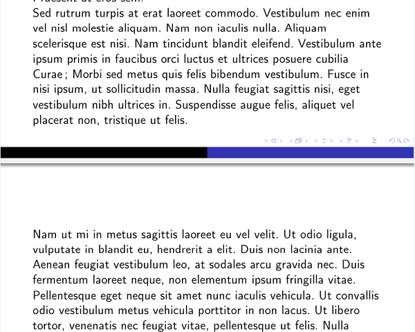
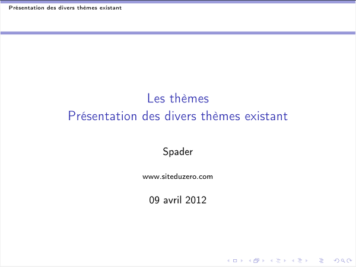
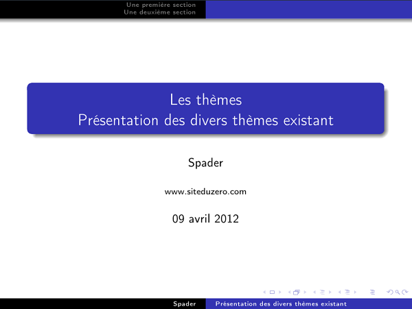

Nous parlerons dans ce tutoriel de la réalisation de diaporamas avec la classe Beamer sous LaTeX. Si vous avez envie de représenter un quelconque élément, présenter un exposé ou d'autres choses encore en y mettant de la valeur, Beamer est un bon choix ! Mais qu'est-ce que Beamer ? Et bien, on compare souvent LaTeX à Word, ici on comparera Beamer à PowerPoint, cette équivalence vous donne donc un petit aperçu de ce que c'est Beamer.
Seulement, il vous faut tout de même des connaissances en LaTeX avant d'aborder ce tutoriel. Mais pas de panique, il existe un très bon tutoriel sur ce site que je vous recommande. Une connaissance et une maîtrise totale de LaTeX n'est pas demandée, non non, rassurez-vous ! Je vous demanderai d'avoir un minimum de bases et un minimum de vocabulaire tournant autour de LaTeX. Quant à l’apprentissage de Beamer, je partirai évidemment de zéro en ajoutant de la difficulté petit à petit pour ne pas vous perdre.
Voici quelques screenshots de ce à quoi peuvent ressembler des diaporamas sous Beamer. Certains screenshots seront manipulés dans ce tuto, je me permet d'en mettre d'autres pour montrer les larges possibilités d'un diaporama avec Beamer, ce sont des images trouvées après une recherche sur Google Images.
Je vous invite d'ailleurs à chercher d'autres exemples de diaporamas conçus avec Beamer sur divers moteurs de recherche d'images, ça je vous laisse faire. :)
Vous voici maintenant dans le tout premier chapitre de ce tutoriel. Avant de nous attaquer directement au logiciel, nous le présenterons de façon générale, nous ferons part de ses points forts ainsi que ses points faibles (notamment par comparaison avec PowerPoint) et pour finir un petit historique rapide de l'apparition de Beamer.
Enfin, je vous amènerai à la réalisation d'un document vierge, ce qu'il y a de plus simple.
Beamer est une classe LaTeX spécialement faite pour la création de présentations (que j'appellerai aussi dans le cours "diaporamas"). C'est en quelque sorte un complément à LaTeX.
La classe Beamer est loin de là, la première classe LaTeX pour faire des présentations.
Historiquement, il y avait les classes slides, et seminar qui sont bien trop "simples" pour des diaporamas. Ensuite sont apparues pdfscreen et prosper qui elles sont bien plus évoluées que les deux classes précédentes. Et enfin est venue Beamer, la meilleure classe actuellement. Elle permet entre autre de faire des pages dites transparentes ou diapositives qu'on va appeler dans le cours frames. Donc retenez que frame sous Beamer, représente une page.
La puissance de Beamer se montre par l'affichage qui se fait dans un PDF. Eh oui, un simple PDF peut servir de présentation ! Vous avez déjà vu des vidéos inclus dans du PDF ? Et bien avec Beamer c'est possible ! C'est beau hein ? Un simple logiciel comme Acrobat Reader suffit à lire vos pdf et donc vos diaporamas.
Enfin, Beamer gère un système de thème, plusieurs thèmes sont disponibles, vous pourrez choisir celui qui vous plait le plus. Nous nous servirons du même tout du long du cours, le choix du thème n'a pas d'importance pour l'apprentissage.
Pourquoi préférer Beamer à PowerPoint ? En fait les arguments sont les mêmes que LaTeX contre Word. Les arguments ont été présentés dans le tutoriel LaTeX du Site du Zéro que je vous avais dit de lire avant de venir me voir. D'ailleurs, je parle de PowerPoint, mais bien sûr il existe d'autres logiciels que lui. Je me contenterai ici de comparer Beamer à PowerPoint. Il vous suffira de comparer PowerPoint à d'autres logiciels si vous le voulez mais je ne vais pas m'attarder à comparer Beamer avec une multitude de logiciels.
Les avantages de Beamer
Quand il s'agit de faire une présentation d'un document déjà écrit en LaTeX, la conversion se fait bien plus rapidement qu'avec un document Word ou autres, logique me direz-vous !
Sa portabilité. Un PDF vous pouvez le lire quasiment sur n'importe quel ordinateur où une simple installation de Acrobat Reader ou tout autre lecteur de PDF suffira. Il n'y aura pas besoin de convertir le fichier, de le mettre en format vidéo ou encore avoir besoin du logiciel PowerPoint pour pouvoir lire votre fichier. Là votre PDF, même s'il dispose de vidéo(s), sera lu avec un lecteur de PDF simple.
Les atouts LaTeX : par exemple les formules mathématiques. Nombreuses sont les personnes qui prennent des formules tapées en TeX pour pouvoir l'inclure sur PowerPoint. A la longue ça devient épuisant. Ici il est modifiable immédiatement à votre guise. C'est quand même plus sympa d'avoir l'outil directement intégré.
L'agencement et les animations ne changent pas systématiquement si on change d'ordinateur. Avec PowerPoint, nous avons par moment des apparitions simultanées alors qu'elles devaient être séparées. C'est mine de rien, un petit détail qui peut énerver.
Pouvoir changer l'effet visuel de la présentation en 2 secondes ! En effet, avec Beamer, on peut utiliser de nombreux thèmes. Et une seule commande suffit pour déclarer le thème que l'on souhaite utiliser. Il y a juste un mot à changer. Ainsi, quand on veut faire une présentation, il est peut être utile de changer le thème selon le contexte dans lequel on voudrait faire sa présentation. On définit un thème, on compile, on définit un autre thème sur ce même document, on re-compile et nous voilà avec 2 présentations identiques sous deux thèmes différents (2 apparences différentes).
Beamer, et plus précisément LaTeX sont GRATUITS
Les inconvénients de Beamer
Les inconvénients ici seraient les mêmes que pour LaTeX contre Word. On ne dispose pas du rendu en temps réel, il faut compiler le fichier avant de pouvoir voir son rendu. Surtout que là, vous allez vouloir faire des transparences, des défilements, des zooms, animations, etc... il vous faudra compiler à chaque fois pour voir le rendu. Mais bon, je vous rassure qu'en fait c'est pas si gênant que ça une fois qu'on s'y fait.
Les effets graphiques tels que les animations sont moins bien nombreux chez Beamer, mais il en dispose tout de même d'un bon nombre et qui plus est, sont intéressants. Bien que cela soit restreint chez Beamer, on est moins tenté de mettre des choses qui tourbillonnent, zooment et clignotent. Au final on fait une présentation qui pique les yeux, ou rend moche la présentation : on la pollue !
Till Tantau créé Beamer principalement lors de son temps libre et fût beaucoup aidé par d'autres personnes ayant contribué à l'élaboration de la classe notamment par leurs suggestions d'améliorations ou de corrections et correctifs ou même encore de thèmes. Till a créé la première version de Beamer pour sa présentation de la défense de doctorat en Février 2003. Un mois plus tard il a rendu la classe publique en la mettant en ligne sur la toile, c'est à partir de ce moment que Beamer a pris toute son ampleur. Till a contribué à Beamer jusqu'en 2007 et c'est en 2010 que Joseph Wright et Vedran Miletić reprennent la main quant au maintien de Beamer et à ses modifications et améliorations, encore aujourd'hui.
Normalement pour les utilisateurs de Windows ayant MikTex 2.9, Beamer est déjà installée. Si vous ne disposez pas de cette version, alors il vous faudra faire la mise à jour vers MikTex 2.9
Si vous ne voulez pas la faire ou que vous ne savez pas si Beamer est installée ou pas, il suffit d'aller dans : C:\Program Files\MiKTeX 2.9 ex\latex\ et regarder si le dossier beamer/, pgf/ et xcolor/ sont présents. Autrement il va falloir les ajouter en les téléchargeant. Ensuite, il faut double-cliquer sur le fichier C:\Program Files\MiKTeX 2.9\miktex\bin\mktexlsr.exe
(Je tiens à préciser que j'utilise comme logiciel TexMaker, et non pas TeXnicCenter)
Linux
De même, sous Linux, si vous avez suivi l'installation de LaTeX comme sur ce site, Beamer est aussi déjà installée par défaut. Autrement, une simple commande sous Linux suffit !
apt-get install latex-beamer
Et voilà, simple non ? :p
(Merci à stephlm2 pour la partie de l'installation de Beamer sous Linux)
Mac
Sur Mac, si vous avez suivi l'installation comme dans le tutoriel du SdZ, c'est-à-dire si vous avez TexShop, Beamer est déjà installée ! :p
Passons maintenant à quelque chose de plus intéressant, créons notre première page d'un diaporama. Elle sera vierge, enfin pas complètement, on va y mettre un petit texte tout de même. :)
Voici le rendu que vous allez obtenir :
\documentclass{beamer}
\usepackage[frenchb]{babel}
\usepackage[T1]{fontenc}
\usepackage[latin1]{inputenc}
\usetheme{Warsaw}
\begin{document}
\begin{frame}
Voici votre première page de présentation en LaTeX !
\end{frame}
\end{document}
Voici le code minimal à fournir à votre document .tex pour créer un diaporama "vierge". Je vous explique les différentes lignes :
\documentclass{beamer}
Cette ligne veut dire exactement la même chose qu'en LaTeX, sauf que là vous ne lui demandez pas de faire un livre, un article ou quoi que ce soit mais vous lui demandez d'utiliser Beamer, donc de faire une présentation/un diaporama.
Pas besoin de vous dire à quoi ça sert, vous le savez déjà (j'espère !). Ces trois packages vous seront utiles pour la réalisation de diaporamas en français.
\usetheme{Warsaw}
Permet d'utiliser le thème "Warsaw", le thème que je vais utiliser tout le long du tutoriel. Bien sûr il en existe d'autres que vous pourrez trouver sur la documentation de Beamer. Je ferai un chapitre sur les thèmes dans la suite du cours, mais le thème n'est pas notre préoccupation pour le moment. Contentez-vous de celui-là pour le moment s'il vous plait. :)
% Debut - Rédaction du diaporama
\begin{document}
% Une page de présentation
\begin{frame}
Voici votre première page de présentation en LaTeX !
\end{frame}
% Fin de cette page de présentation
\end{document}
% Fin - Rédaction du diaporama
Entre le \begin{document} et le \end{document}, se trouvera le contenu de votre diaporama. Attention je dis bien le contenu de votre diaporama, et non pas le contenu d'une page. Pour faire une page dans le diaporama, c'est le code qui suit, il suffit de la déclarer par \begin{frame} et la terminer par \end{frame}. Et voilà, vous disposez d'un diaporama vierge, avec une ligne de texte. Bon encore rien de bien intéressant, mais le chapitre suivant traitera des frames, on verra pour en faire plusieurs et les habiller.
Et si on veut pas utiliser de thème ? C'est obligatoire d'en choisir un ? Parce qu'à première vue ça ne semble pas être une commande obligatoire pour Beamer !
Oui en effet, j'ai oublié un petit détail. Il est tout à fait possible de ne pas utiliser de thème. Essayez de retirer la ligne, vous verrez bien par vous même. Vous avez essayé ? Ça fait un truc vraiment tout simple et tout blanc ne disposant que de la barre tout en bas à droite, tout moche (ou pas) ! Après c'est comme vous voulez, mais je trouve personnellement que utiliser un thème rend plus attractif le diaporama, surtout que celui là n'a rien de bien méchant et est fort sympathique je trouve !
Dans les prochains chapitres, j'utiliserais toujours ce même et unique thème (un chapitre sur les thèmes fera son apparition un peu plus loin dans le cours), en effet, je vais faire intervenir certaines notions qui ne seront présente qu'en présence d'un thème. De plus, cela me facilitera la tâche à tout bien vous expliquer, vous verrez en temps et en heure.
Une page de présentation vraiment vierge avec du texte aurait donné ça normalement ! :)
Ce premier chapitre touche à sa fin et a du vous mettre un peu l'eau à la bouche. Vous avez maintenant envie de vous mettre à Beamer ou de le tester tout simplement.
Vous avez maintenant les connaissances pour créer un diaporama sous LaTeX avec Beamer, les chapitres suivants vont être bien plus intéressant que la dernière partie de ce chapitre. En effet, vous y verrez diverses choses à intégrer et plus ou moins utiles pour vous !
Vous devez vous en douter, un diaporama est constitué de plusieurs pages, ce qui est l'objet de notre chapitre ici. Nous allons voir les différentes frames possibles dans un diaporama sous Beamer, et nous verrons aussi quelques options que l'on peut appliquer.
Une frame concrètement, c'est quoi ? Ça se base sur quoi ?
Une frame de base se compose en général d'un titre de page, d'un sous-titre et du texte dans le corps de page. En bas à droite on peut voir des éléments qu'on appelle les symboles de navigation. A chaque fois que l'on déclare une frame, ces éléments sont présent mais on peut néanmoins les supprimer. Enfin dans le corps de page se situe le texte, le texte est par défaut en police sans-serif.
Je tiens aussi à préciser qu'on définit une frame par une page, mais une frame peut contenir plusieurs pages ! Vous suivez ?! On peut déclarer une frame et vouloir mettre dans cette même frame plusieurs page, qui elles formeront plusieurs pages de cette même frame. Il ne faut pas confondre, et savoir de quel type de page on parle. Grosso modo on peut parler de pages et de sous-pages.
Récapitulons tout ceci en code maintenant, cela nous donne :
\begin{frame}
\frametitle{Un exemple de titre}
\framesubtitle{avec un exemple de sous-titre}
Enfin, le texte ! :)
\end{frame}
Et en rendu :
Ahah, c'est déjà mieux que notre page vierge du chapitre d'avant hein ! :p
Remarquons donc que :
\frametitle{Un exemple de titre}
Cette commande vous permettra de donner un titre à votre page, tout en haut en assez grand. Vous pourrez constater qu'un dégradé est apparu en haut, pour y laisser place à votre titre, plutôt sympa non ?
\framesubtitle{avec un exemple de sous-titre}
Cette commande elle, vous permettra d'ajouter un sous-titre, qui se situera donc, sous le titre (eh oui ! :p ). Ce titre apparaîtra en plus petit et permettra de compléter votre titre si vous le désirez.
Les labels
On peut donner un label à notre frame. Le label vous servira à faire une référence dans une autre page, de cette frame, il vous servira aussi dans cette autre page, de pouvoir y venir directement lorsqu'on l'on y fait référence. Rien de compliqué à faire cela, il suffit juste de spécifier en option :
\begin{frame}[label=(nom du label)]
(nom du label) devant être remplacé par le titre que vous voulez donner. Eh oui on peut ajouter des options à l'environnement frame, en voici un, nous allons en voir d'autres.
Au final, notre code complet pour faire une diapo avec une page banale est :
\documentclass{beamer}
\usepackage[frenchb]{babel}
\usepackage[T1]{fontenc}
\usepackage[latin1]{inputenc}
\usetheme{Warsaw}
\begin{document}
\begin{frame}[label=pagebanale]
\frametitle{Un exemple de titre}
\framesubtitle{avec un exemple de sous-titre}
Enfin, le texte ! :)
\end{frame}
\end{document}
Voyons maintenant comment afficher une page avec du verbatim !
Du verbatim ? Mais qu'est-ce que c'est ? :euh:
Eh bien comment dire ! Traduisez verbatim de l'anglais vers le français, on va vous répondre : "Textuellement". Ça commence à être plus clair là ? Non ? Bon alors je vous explique, en fait par "textuellement" on peut sous entendre "tapé à la machine". Cet environnement verbatim ne va rien faire d'autre que changer la police du texte, en y mettant une police qui ressemble à celle des vieilles machines à écrire. Cet environnement est un environnement de texte, il peut être utilisé pour de nombreuses raisons, selon vos souhaits.
Une première méthode
Une première méthode pour pouvoir dire à une frame que l'on va utiliser du verbatim, il faut lui ajouter une option : fragile. Sans cette option fragile, vous ne pourrez pas utiliser de verbatim !!
Concrètement, que va faire l'option fragile ? Ben en fait elle va rendre votre texte "fragile". Grosso modo, votre compilateur ne va plus oser s'occuper de votre texte écrit et va l'afficher comme tel. De ce fait, vous pourrez écrire des multitudes de commandes LaTeX dans cet environnement, elles ne seront jamais prises en compte et seront affichées donc avec les antislashs tout ça, et sans aucun effet.
Cet environnement est donc utile pour présenter un code sans qu'il soit pris en compte, par exemple pour faire un diaporama pour apprendre le LaTeX, vous pourrez présenter vos formules en toute tranquillité, sans que Beamer ne les prenne en compte. Plutôt sympa non ? Donc retenez que cet environnement ne va jamais toucher et effectuer d'actions sur vos textes tapés dedans !
Voici donc le code à écrire :
\begin{frame}[fragile]
Et voilà, votre compilateur est au courant que la page sera utilisé avec du verbatim ! Tapez maintenant tout ce que vous voulez sans avoir peur qu'il exécute quoi que ce soit, essayez !
Faisons des petits tests pour comprendre comment marche cet environnement.
Testez en enlevant l'option fragile, vous verrez qu'on vous retournera une erreur. Ainsi de ce fait, quand vous déclarez cette option fragile, le compilateur saura que tout environnement verbatim sera fragilisé, et vous pourrez écrire votre code à l'intérieur comme vous le souhaitez sans qu'il soit pris en compte. Vous pouvez déclarer votre environnement autant de fois que vous le voulez dans cette même phrase, cela ne posera pas problème.
Testez maintenant en mettant du texte dans l'environnement verbatim et un autre dans l'environnement center. Seul le texte fragilisé sera celui situé dans l'environnement verbatim, le reste ne le sera pas. Pour ajouter du texte en dehors de cet environnement verbatim, il faut que le texte soit placé dans un environnement, sinon le compilateur vous retournera un erreur.
Je vous montre un exemple pour être sûr d'avoir bien compris ? Alors en voici un, je vais me contenter d'écrire des formules LaTeX pour bien voir ce qu'il se passe.
\begin{frame}[fragile]
\begin{center}
Texte non fragilisé, la \textbf{preuve}
\end{center}
\begin{verbatim}
Pour afficher cette page, j'ai utilisé ce code :
\begin{frame}[fragile]
Suivi de l'environnement verbatim :
\begin{verbatim}
\end{verbatim}
\end{frame}
Et voilà, vous pourrez ainsi voir que les commandes situées entre \begin{verbatim} et \end{verbatim} ne sont pas prises en compte et sont affichées dans le diaporama.
Une deuxième méthode
Le semiverbatim !
C'est dommage j'aimerais bien avoir du verbatim et que mes commandes soient prises en compte, c'est possible ?
Eh bien oui ! Avec cet environnement vous pourrez écrire des commandes LaTeX, afficher vos formules mathématiques, tout ce que vous voulez le tout en écrivant en verbatim. Il suffit juste de déclarer l'environnement semiverbatim, et il fonctionnera exactement pareil que verbatim. Il faut cependant pour cet environnement supprimer l'option fragile.
Voici un exemple d'utilisation :
\begin{frame}
\begin{semiverbatim}
Une formule mathématique : $\int_a^b{f(x).\text{d}x} = A$.
\end{semiverbatim}
\end{frame}
Et vous obtiendrez ainsi un texte écrit en verbatim, qui a pu subir des modifications grâce aux commandes LaTeX :
Il est possible aussi de définir une frame sans aucun décor. C'est-à-dire que l'on verra plus le dégradé en haut et plus les rectangles de couleurs tout en bas. Il arrive que pour certaines pages on voudrait ne rien voir apparaitre pour quelques soient les raisons. Soit parce que la page est la suite d'une autre, soit parce qu'on aimerait gagner un peu de place, ou soit ben ... on aime pas tout simplement !
Voici donc une page sans aucun décor :
Je vous avais dit que l'on verrait d'autres options à appliquer à l'environnent frame, c'est aussi à l'aide d'une option que l'on définit une page sans aucun décor. Voici la commande à exécuter :
\begin{frame}[plain]
Page sans en-tête ni pied de page.
\end{frame}
On affecte cette fois-ci l'option plain à l'environnement frame. Vous pouvez néanmoins toujours ajouter un titre et un sous titre et là vous reverrez apparaitre l'en-tête de page. Donc si vous voulez supprimer les rectangles du bas et pas ceux du haut, ça peut être une astuce ! :)
\begin{frame}[plain]
\frametitle{Ajout de la tête de page}
Page avec en-tête mais sans pied de page.
\end{frame}
Chose simpliste j'avoue, mais peut être utile de préciser. Perso je m'en suis encore jamais servi, mais si ça peut en intéresser quelques uns !
Si vous avez pratiqué et testé votre curiosité, vous avez peut être du vous rendre compte qu'un gros texte ne passe pas et n'est pas entièrement affiché sur la page, et déborde même sur les éléments de navigation. Si vous ne l'avez pas vu, moi je vous le dis, testez vous verrez. :lol:
On voit que le texte dépasse sur la barre de navigation, et normalement après le "ante." à la fin du texte, il devrait y avoir encore du texte, ici invisible et supprimé par Beamer. Ca fait moche (enfin de mon avis :p ).
Comment régler le soucis ?
Il y a encore une nouvelle option à appliquer, une dernière que je vous présente ici. L'option à appliquer à l'environnement frame est cette fois-ci allowframebreaks. Cette option va, si il y a trop de texte, couper le texte et mettre le texte en trop sur une nouvelle page. Testez avec un long texte, vous verrez bien :
\begin{frame}[allowframebreaks]
Pour mon cas ça devient ça moi :

Remarquez que le texte ne dépasse pas sur la barre de navigation, qu'il a été coupé et mis sur une page suivante (repérez mon "ante." maintenant !).
Commande pratique pour éviter d'avoir à re-déclarer une nouvelle frame à chaque fois qu'un texte est trop gros, de voir à chaque fois sur les previews si le texte est correct ou non, etc ... Ici tout se fait automatiquement si vous savez que votre page contiendra un gros texte. De plus, vous pourrez en ajouter entre deux, les pages s'adapterons toutes seules.
Voici donc les principales frames utilisées sous Beamer. Bien sûr on peut encore faire bien d'autres choses en appliquant bien d'autres options à l'environnement frame mais n'allons pas trop vite, j'ai pas envie de vous perdre. Contentez-vous de ces 4 cas de figure, c'est déjà pas mal je trouve et suffisant !
Dans le chapitre suivant nous allons voir les éléments de base du diaporama, nous allons apprendre à structurer notre diaporama. :)
Maintenant que nous savons créer différentes sortes de frames, complétons-les maintenant et intégrons des choses intéressantes pour pouvoir faire de jolies diaporamas.
Ce chapitre vous présentera les éléments de base pour constituer un diaporama. Nous verrons différentes options applicables à la classe Beamer, comment faire une page de titre (une page de garde en gros) qui s'affichera lors de l'ouverture de votre diaporama et ajouter un sommaire et une annexe. Enfin nous aborderons un peu les marges et la mise en place d'un logo.
Déjà là notre diaporama va sembler plus intéressant, donc allons y ! :D
Nous allons dans un premier temps voir les options applicables à la classe Beamer. Il peut être intéressant de modifier certaines choses dans sa globalité telles que définir un diaporama avec une plus petite écriture, changer la position du texte ou encore supprimer le nom de l'auteur du PDF ainsi que son titre. C'est ce que je vais vous apprendre maintenant.
Rappelez-vous, dans le tout premier chapitre je vous avez dit que pour utiliser Beamer, il fallait indiquer cette formule :
\documentclass{beamer}
Mais je m'étais bien caché de vous dire qu'on pouvait lui attribuer des options, je vais vous en présenter quelques une ici. :)
Pour déclarer une option on procède de cette façon :
\documentclass{beamer}[option]
On peut aussi en attribuer plusieurs :
\documentclass{beamer}[option1, option2, ...]
La taille de la police
On peut modifier la taille de la police comme telle :
\documentclass[10pt]{beamer}
On détermine ainsi la taille de la police à 10pt. Les autres valeurs que l'on peut attribuer sont 11pt et 12pt. Par défaut, (c'est-à-dire si on ne fait pas appel à cette option), la taille de la police est à 11pt.
Les éléments du corps de page
Par défaut, vous avez du le constater, le texte est centré verticalement sur la page. Il est possible de modifier cela :
\documentclass[t]{beamer}
Avec l'option :
[t] : le texte sera aligné en haut.
[b] : le texte sera aligné en bas.
[c] : le texte sera centré verticalement (la valeur par défaut). Ne pas confondre avec horizontalement !
Supprimer le titre et l'auteur
\documentclass[usepdftitle=false]{beamer}
Cette option supprime l'information titre et auteur du PDF (que l'on va voir juste après, ne vous inquiétez pas). Cette commande est utile si l'on ne veut pas afficher ces deux éléments. Pour éviter tout problème, mieux vaut le faire via cette option que autrement via des alternatives.
Éléments de structure
Tout débutant à LaTeX connait ses éléments de structure. En effet dans un document LaTeX on peut définir une partie, un chapitre, une section, un paragraphe, etc ... Bien sûr sous Beamer c'est possible, mais certaines commandes ne sont pas disponible ! Voici donc les commandes applicables à Beamer :
Nom
Commande
Section
\section{nom de la section}
Sous section
\subsection{nom de la sous section}
Oulah, ça fait un peu beaucoup de commande en moins là, normal ?
Eh bien oui ! Vous verrez que sous Beamer, ces deux commandes suffisent largement ! A vous d'insérer ces deux commandes où vous le souhaitez, en dehors des frames.
Un peu de pratique
Avec les deux commandes que je vous ai cité ci-dessus, j'aimerais que vous me fassiez 2 sections, dans chacune de ces sections, je voudrais voir 2 pages de sous sections. Vous m'avez compris ? C'est simple il suffit de faire à la lettre ce que j'ai dit ! En gros je vous demande : une section qui comprend 2 pages de 2 sous sections différentes à chacune de ces pages, et une deuxième qui reprend pareil que la première.
...
...
...
Alors, vous avez essayé ? Vous avez trouvé ? Je vous donne ce que j'attendais plus ou moins donc !
Et votre code final doit ressembler plus ou moins à ça, au texte dans les pages près !
\begin{document}
\section{Section 1}
\subsection{Sous section 1 de la Section 1}
\begin{frame}
Ma première page !
\end{frame}
\subsection{Sous section 2 de la Section 1}
\begin{frame}
Et maintenant ma deuxième page !
\end{frame}
\section{Section 2}
\subsection{Sous section 1 de la Section 2}
\begin{frame}
Voici ma troisième page, elle appartient à ma deuxième section ! :)
\end{frame}
\subsection{Sous section 2 de la Section 2}
\begin{frame}
Et celle là c'est la deuxième page, mais de ma deuxième section.
\end{frame}
\end{document}
J'espère que vous avez remarqué la présence de nouveaux éléments sur votre diaporama quand même non ? :p Concrètement il y a quoi de nouveau ? Tout simplement les deux rectangles de couleurs tout en haut. Il vous en faudra peu pour deviner que le rectangle de gauche listera vos sections définis dans TOUT le diaporama, et le rectangle de droite listera vos sous section de la section que vous êtes actuellement en train de lire.
Lorsqu'on lance le diaporama, il est possible d'avoir une page de présentation. Comme une page de garde sur LaTeX. Une page de titre est très courant dans un diaporama. A un livre on y donne souvent un titre, ben là c'est pareil. Beamer a pensé à vous, et voici comment construire sa page de titre qui vous donnera à peu près ceci :
Elle se construit grâce à différentes commandes précisées auparavant, avant le \begin{document}. Donc si vous avez bien suivi le début du chapitre, dans le préambule. :)
\title
\author
\institute
\date
Expliquons ces commandes :
itle définit le titre de votre présentation définit le titre de votre présentation
\author définit l'auteur de la présentation
\institute définit le cadre ou le lieu de la présentation
\date définit la date de création du diaporama. Vous pouvez mettre oday si vous le voulez.
Et enfin pour déclarer notre page de présentation, on procède comme ceci :
\begin{frame}
\titlepage
\end{frame}
Encore une fois, rien de bien compliqué, je vous présente un exemple pour que vous puissiez tester et être sûr que vous ayez bien compris :
\documentclass{beamer}
\usepackage[frenchb]{babel}
\usepackage[T1]{fontenc}
\usepackage[latin1]{inputenc}
\usetheme{Warsaw}
\title{Faire une présentation en LaTeX avec Beamer}
\author{Spader}
\institute{www.siteduzero.com}
\date{09 avril 2012}
\begin{document}
\begin{frame}
\titlepage
\end{frame}
\end{document}
Sympa non ? Bon j'avoue c'est pas encore vraiment comme sur la photo présenté ci-dessus, j'y viens. Mais avant remarquons que le titre s'est mis tout seul dans un cadre bleu et que les deux rectangles noir et bleu en bas ont été complétés ! L'un par l'auteur, l'autre par le titre.
Revenons au petit détail que j'ai parlé juste au dessus, du fait que ce soit pas vraiment comme sur la photo : il y a possibilité de donner un autre titre que celui en gros dans le cadre bleu. Notamment pour donner un titre plus court que celui donné au diaporama dans la page de titre. Ce titre on le met entre crochet avant les accolades comme tel :
\title[Faire une présentation en LaTeX avec Beamer]{Les bases de Beamer\\Comment faire une page de titre ?}
Ainsi "Faire une présentation en LaTeX avec Beamer" s'affichera que dans le rectangle bleu en bas et "Les bases de Beamer\\Comment faire une page de titre ?" s'affichera dans le gros rectangle bleu centré sur la page.
Vous voilà maintenant apte à faire de jolies pages de présentation ! :D
On souhaite souvent faire apparaitre le plan de sa présentation tout comme on veut souvent faire apparaitre le sommaire d'un livre. Lorsque l'on fait une présentation, surtout si elle est grande, on est souvent amené à vouloir faire un sommaire. Que ce soit pour présenter ce que l'on va présenter (oulah, deux fois "présenter" :lol: ), pour se repérer et accéder aux espaces voulus plus vite, enfin bref, il existe plusieurs causes pour l'ajout éventuel d'un sommaire dans son diaporama.
L'ajout d'un sommaire se fait par une seule et une seule commande qui cette fois-ci est ableofcontents. Toutefois, pour voir le sommaire, il faut qu'il soit dans une page. On insère donc cette commande dans l'environnement frame. Plusieurs options lui sont applicable.
ableofcontents[currentsection] : Indiquera la section en cours ainsi que sa sous section en cours. Le reste apparaitra en transparent. : Indiquera la section en cours ainsi que sa sous section en cours. Le reste apparaitra en transparent.
ableofcontents[currentsubsection] : Ne seront transparents que les sous sections n'étant pas en cours. : Ne seront transparents que les sous sections n'étant pas en cours.
ableofcontents[hideallsubsections] : N'affichera plus du tout les sous sections. : N'affichera plus du tout les sous sections.
ableofcontents[hideothersubsections] : Affichera tout, sauf les sous sections des sections n'étants pas en cours. : Affichera tout, sauf les sous sections des sections n'étants pas en cours.
ableofcontents[pausesections] : Fera une pause avant d'afficher le nom de la section suivante. Il faudra donc cliquer pour faire apparaitre la section n°2, puis re-cliquer pour faire apparaitre la section n°3, ... : Fera une pause avant d'afficher le nom de la section suivante. Il faudra donc cliquer pour faire apparaitre la section n°2, puis re-cliquer pour faire apparaitre la section n°3, ...
ableofcontents[pausesubsections] : Pareil qu'au dessus, sauf que là ce sera aussi pareil pour les sous sections, on affichera donc tout, un à un. : Pareil qu'au dessus, sauf que là ce sera aussi pareil pour les sous sections, on affichera donc tout, un à un.
ableofcontents : Sans option. Oui, en fait quand on met rien, ben ... ça affiche tout ! :lol: : Sans option. Oui, en fait quand on met rien, ben ... ça affiche tout ! :lol:
On peut comme je l'ai dit tout à l'heure, combiner plusieurs de ces options. Maintenant, je ne peux que vous encourager à faire plusieurs pages disposant de plusieurs sections et sous sections, et tester ces différentes options.
Sommaire automatique
Par moment, on souhaite afficher le sommaire avant chaque début de section, ou même encore avant chaque début de sous section, mais il peut être lourd de devoir à chaque fois insérer la commande suivi de ses options. Puis pour le peu qu'on veuille changer les options, il faudra modifier tous les autres un par un, ce qui peut être pénible, surtout si on a une grande présentation à faire. Je vous apprend donc une technique ici, qui consistera à vous faire un sommaire automatique.
Explications : \AtBeginSection[] veut dire qu'on définit à chaque début de section. Puis entre les accolades on insère ce que l'on veut voir avant chaque début de section. Ainsi ici dans mon exemple, à chaque début de section le sommaire fera son apparition en indiquant la section et la sous section en cours, en cachant les autres sous sections. Avec une pause entre chaque sous sections.
Annexes
Il faut savoir que la commande \appendix est reconnu par Beamer. Elle marche de la même façon que sous LaTeX. Essayez de voir par vous même, je me répète encore mais c'est par la pratique que l'on apprend et comprend le mieux !
Un diaporama sous Beamer est de taille 128mm sur 96mm, en format 4:3. Ca vous parait peut être peu, mais sachez que sur ordinateur c'est très suffisant, et vous avez du le constater je suppose ! Vous allez me dire oui mais quand on projette, on agrandit ! Oui oui bien sûr ! Sauf que là c'est le rôle de vos lecteur de PDF de garder la qualité, et sachez qu'ils le font très bien, il ne faut donc pas que ce soit un soucis pour vous.
L'avantage de cette taille est qu'on peut utiliser une écriture normale telle que 11pt, et cela empli bien le contenu de votre page, n'est-ce pas ? :) Le contenu, là où se situe votre texte, subit lui même ce qu'on appelle des marges. C'est-à-dire que votre texte sera espacé des bords du diaporama. Des fois c'est peut être un peu trop, des fois pas assez, mais sachez que ces marges sont modifiables, c'est l'objet de la partie justement !
\setbeamersize
C'est cette commande qui va vous permettre de modifier vos marges, elle est à utiliser dans le préambule. Décomposons et traduisons en français cette commande : set en français signifie modifier, size signifie taille. On a donc pour setbeamersize un semblant de : modifier taille Beamer, donc modifier les marges sous beamer. Cette commande bien sûr il va falloir lui spécifier ce que l'on veut modifier comme marge.
Il faut distinguer les 4 types de marges modifiables :
Le corps de page
La barre latérale
De description
De ce qu'on appelle mini frame.
Nous allons voir ici comment modifier les marges du corps de page. Les autres, nous avons pas encore les notions nécessaire pour pouvoir appliquer ce changement de marge.
Il est possible de modifier la marge que de gauche ou de droite ou les deux en même temps. Mais on ne peut pas avec cette option modifier la marge du haut ou la marge du bas. On va pour cela procéder comme tel :
\setbeamersize{text margin left=(taille de la marge)}
La taille de la marge est à préciser en cm, comme par exemple : \setbeamersize{text margin left=0.1cm}. Pour modifier la marge de droite seulement il suffit de remplacer "left" par "right", et pour disposer d'une marge des deux côtés, une virgule est suffisant pour annoncer les deux modifications.
\setbeamersize{text margin left=(taille de la marge), text margin right=(taille de la marge)}
A vous de gérer comment vous voulez placer vos marges, ou alors si vous le souhaitez de laisser les marges par défaut.
Le logo
Il est aussi possible d'ajouter un logo à vos pages. Par exemple, si vous faite une présentation sur le site du zero, il est parfois intéressant de vouloir mettre le logo de Zozor ! :p Le logo peut se mettre sur toutes les pages par défaut, tout comme il peut se mettre que sur certaines pages précises. On peut aussi changer le logo quand on le souhaite après tant de pages.
On utilise la commande \logo pour insérer notre logo, qui dans ce thème là, s'insérera en bas à droite, au dessus de la barre de navigation. Cette commande peut être appelé à n'importe quel endroit dans le fichier (bien sûr sauf après le \end{document} ...). On peut aussi l'appeler plusieurs fois, pour changer de logo à un moment donné. Donc si vous voulez pratiquez un peu, essayer de placer cette commande toutes les deux pages avec une image différente, vous verrez que sur le rendu on changera d'image toutes les 2 pages.
Oui mais comment on insère un logo alors ?
Hum... Comme ça !
\logo{\includegraphics[height=(taille)]{(lien de l'image)}}
La taille est cette fois-ci à préciser en mm ! Vous ne voulez quand même pas d'un logo qui prend la moitié de la page quand même ? :lol:
Enfin, pour ce qui est du lien de l'image, il suffit de renseigner le nom de l'image avec son extension (par exemple : image.png).
Et voilà, un gros chapitre d'assimilé ! Mine de rien, avec tout ce que vous avez avalé là, vous pouvez déjà faire un beau petit diaporama. Vous avez vu les diverses choses que l'on trouve sur des diaporamas, reste maintenant à approfondir ces connaissances !
On le verra dans les chapitres suivants, tout ce qu'on a vu là, peut être poussé plus loin. :)
Je vous retrouve dans le chapitre suivant, un peu moins gros, parlant de la navigation. :D
Vous voici maintenant dans un chapitre un peu plus simple que les deux derniers, puisqu'il traite que d'une seule et même chose : la barre de navigation.
Nous allons voir quels sont les différents symboles, ce qu'ils représentent, ce que l'on peut faire avec, etc ... En gros, cette barre va favoriser le passage d'une page à une autre, nous verrons que nous pouvons nous même intégrer des boutons pour pouvoir jouer plus facilement avec le diaporama.
La barre de navigation est en grande majorité placé en bas à droite de la page. Cette barre n'est pas obligatoire et peut être supprimé si vous le désirez en l'indiquant à votre document, en effet, on peut ne trouver aucun intérêt à utiliser cette barre, c'est le choix de l'auteur du diaporama de supprimer ou non cette barre. D'ailleurs, voyons tout de suite comment la supprimer. Une option suffit à la déclaration de la classe beamer : handout. Cette option va donc supprimer la barre de navigation et que elle, et elle seule, bien évidemment !
\documentclass[handout]{beamer}
Cette barre peut paraitre dérangeante pour certaines personnes, mais elle est souvent utile, et cela pour diverses raisons. On peut revenir à une ou des pages antérieures quand on le souhaite, à n'importe quel moment du diaporama. On peut même saisir le numéro de page pour revenir à cette page que nous avons saisi. Cette option peut être intéressante pour revenir sur un point, ou pour réexpliquer quelque chose qui lors de la diffusion du diaporama, le lecteur n'a pas compris ou autres raisons pouvant amener à ceci. Vous pouvez aussi sauter des parties, si vous avez déjà par exemple lu les premières parties, que c'est un nouveau jour, hop on saute tout d'un coup. Ou tout simplement, les parties à sauter ne sont pas intéressantes pour les personnes lors de sa diffusion.
Cette barre est donc présente pour faciliter la présentation du diaporama et la vitesse de passage à certaines parties. Les éléments de navigation sont en quelque sorte, si vous le préférez, des raccourcis et des accélérateurs (pour les fainéants ! :p ). Ne soyez pas trop sévère avec ces boutons, je vous assure qu'ils sont tout de même utiles, je vous le promet, et vous vous en servirez sûrement à un moment donné, si ce n'est pas déjà fait.
En fait quand j'y pense, je vous ai toujours pas montré ce que c'est la barre précisément ! :lol: Vous l'avez deviné quand même ? Allez je vous la montre, la barre de navigation dont je vous parle depuis tout à l'heure, c'est celle-ci, qu'on soit bien clair !
Les symboles de navigations sont les chaque petit constituant de cette barre. La position de la barre est par défaut horizontal. Nous verrons que nous pouvons aussi la mettre verticale, qui est sympa aussi, je vous montrerai comment faire dans la suite, ne vous inquiètez pas ! Sachez que cette barre est modifiable : on peut choisir le ou les symboles que l'on veut intégrer. Par défaut tous les boutons sont présent, mais on peut malgré tout choisir quel bouton intégrer, et quel bouton supprimer. Pour cela on utilise la commande \setbeamertemplate. Cette commande est à insérer dans le préambule. Vous allez peut être commencer à comprendre comment peut-on mettre la barre verticale. Voici donc comment intégrer tous les boutons de la barre de navigation :
A chaque ligne, correspond l'insertion d'un bouton de navigation dont je vous expliquerai leur fonctionnement ci-dessous. Sachez donc que si vous voulez retirer un bouton de navigation, il suffit de retirer la ligne correspondante à ce bouton, et le tour est joué. Essayez de supprimer quelques lignes, vous verrez bien ce qu'il se passe. Logiquement si vous avez supprimé des lignes, la barre a du se rétrécir (bien sûr ne supprimez pas la première ni la dernière ligne 1 et 8).
Par exemple, voici un exemple de comment disposer d'une barre de navigation ne disposant que d'un élément :
Donc comme je vous le disais précédemment, il y a présence de pas mal de symboles, qui peuvent vous paraitre interrogateurs si vous avez essayé de tester par vous même ! Je vous ai séparé ces boutons un à un pour vous expliquer leurs utilités, toujours un à un.
: Icône slide En cliquant sur les flèches de gauche et de droite, vous passerez respectivement aux pages d'avant et d'après : Page suivante, page précédente. En cliquant sur le rectangle au milieu, une fenêtre s'ouvrira vous demandant à quelle page vous souhaiter aller. Entrez le numéro de page auquel vous voulez aller, confirmez, vous arriverez à la page demandé !
: Icône frame Cet élément permet d’exécuter les mêmes actions que le bouton ci-dessus, sauf que là il ne s'agit plus de pages mais de frames. Autrement dit, vous passez d'un environnement frame à un autre. Ne confondez pas ! Une frame peut contenir plusieurs pages sur un diaporama.
: Icône sous section Idem, il s'agit maintenant de passer d'une sous section à une autre.
: Icône section Idem encore ici, on passe d'une section à une autre.
: Icône docnavigation En cliquant à gauche, on accède au tout premier slide du diaporama. A droite on accède au dernier slide du diaporama. Attention, si vous avez mis la commande \appendix, le dernier slide sera dans un premier temps le dernier jusqu'à l'appendice, ensuite on sera au début de l'appendice, donc en cliquant à droite par la suite, on sera à la fin de l'appendice. Cette commande se définit donc selon deux grosses parties : une contenant toutes vos parties, l'autre contenant vos annexes.
: Icône backfindforward En cliquant sur la flèche de gauche, vous reviendrez au dernier slide affiché. En gros, vous faites un "précèdent". De même, en cliquant sur la fléche de droite, vous accéder au slide que vous avez affiché avant de faire un retour en arrière, c'est en gros un "suivant". En cliquant sur la loupe, vous pourrez rechercher des mots du diaporama pour ensuite atterrir sur une page contenant ce mot.
Testez un peu tout ceci avec un diaporama disposant d'un peu de tout de ce que j'ai cité ci-dessus. Il faut vous familiariser avec ces boutons, surtout lors du moment où vous présenterez votre diaporama devant tout le monde ! :p
Si je devais résumer les différents boutons ci-dessus en un code, ça donnerait ça :
A vous d'insérer les lignes utiles à vous ! Ou plutôt de retirer, ou alors tout garder, c'est comme vous le sentez ! Mais si c'est pour tout garder, autant ne rien mettre et d'éviter d'encombrer le code. :lol:
Tout à l'heure je vous avais parlé de disposer le menu verticalement. Je vous avais dit comment l'avoir, je vous explique maintenant comment faire, voilà l'astuce.
Vous pourrez remarquer que en fait, on utilise la notion des cases verticales sous LaTeX, ce qui fait donc apparaitre un petit menu sympa, vertical. En modifiant un peu la marge de droite, ça pourrait faire pas mal. Fallait le voir hein, vous y avez pensé ?! De ce fait, vous pouvez personnaliser votre barre comme vous le souhaitez si vous êtes vraiment à l'aise avec LaTeX. De même ici, choisissez ce que vous voulez insérer ! Le fait de mettre la barre en verticale ne change strictement rien.
La barre de navigation n'est pas le seul moyen de passer d'une page à une autre. On peut aussi inclure des boutons décidant de passer à telle ou telle page. D'ailleurs ça peut être un bouton tout comme ça peut être un texte. On a ainsi un moyen sympa de passer d'une page à une autre, et de revenir à la source ! Vous dynamiserez donc votre diaporama, le rendant bien plus sympa et attractif !
Comme d'habitude, une nouvelle commande fait son apparition pour ceci, disposé elle aussi de plusieurs options applicables. Cette commande ? \hyperlink, en français ça donne : lien hypertexte. Ce qui vaut le titre de cette partie.
Il existe deux sortes de liens sous Beamer : les liens prédéfinis qui sont basiques et exécute des actions tel qu'un retour en arrière ou un passage au suivant. L'autre type de lien est celui qu'on définit, c'est-à-dire qu'on définit une cible là où on veut que le lecteur atterrisse. Ça veut dire qu'on peut lui faire sauter 40 pages d'un coup !
Les liens prédéfinis
Pour utiliser les liens prédéfinis par Beamer, on utilise la commande \hyperlink auquel le nom hyperlink est prolongé selon l'action qu'on veut donner au lien. Voici les différents types de liens prédéfinis qu'on peut trouver :
\hyperlinkslideprev{(votre texte)} : Va au début de la section en cours de lecture.
\hyperlinkslidenext{(votre texte)} : Va à la fin de la section en cours de lecture.
\hyperlinkframestartnext{(votre texte)} : Va à la frame suivante de la page en cours de lecture.
\hyperlinksectiontartnext{(votre texte)} : Va à la section suivante de la page en cours de lecture.
\hyperlinksubsectiontartnext{(votre texte)} : Va à la sous section suivante de la page en cours de lecture.
\hyperlinkframeendprev{(votre texte)} : Va à la frame d'avant de la page en cours de lecture.
\hyperlinksectionendprev{(votre texte)} : Va à la section d'avant de la page en cours de lecture.
\hyperlinksubsectionendprev{(votre texte)} : Va à la sous section d'avant de la page en cours de lecture.
\hyperlinkpresentationend{(votre texte)} : Va à la première section du diaporama. Cette commande ne fonctionne pas pour les annexes.
\hyperlinkappendixstart{(votre texte)} : Va au début de l'annexe.
\hyperlinkappendixend{(votre texte)} : Va à la fin de l'annexe.
\hyperlinkdocumentstart{(votre texte)} : Retour à la page de présentation.
Toujours pareil, tester ces boutons un peu partout pour bien comprendre leur fonctionnement. :) On constate qu'on a du choix dans à peu près tout, j'ai pas mis tous les liens existants, mais les plus importants et plus utiles dont on peut avoir à faire dans Beamer.
Ces commandes à première vue, ne seront rien d'autre que du texte à vos yeux. Mais ce sont néanmoins des liens "cliquables" qui exécute une action tout de même. Par exemple j'ai décidé ici de faire un retour à la page de présentation. Vous le constaterez, pas beaucoup de changement. Nous allons voir après comment mettre en valeur les liens par des boutons (toutefois vous pouvez mettre vos liens en valeurs en mettant en gras, souligné, italique, ...).
Liens atterrissant à des cibles
Vous vous rappelez dans le chapitre 2, j'ai dit qu'on pouvait donner un label à notre frame, et je vous avais aussi dit qu'on pouvait y faire des références grâce à ça. J'y viens maintenant, en effet, on va pouvoir grâce à un bouton, décider d'aller à la frame que l'on veut, que l'on a choisis. Il suffira de donner le label de la frame sur laquelle on veut que la destination soit en cliquant sur le bouton, le texte. Comment on procède ? Comme ça :
\hyperlink{(cible)}{(texte pour aller à la cible)}
Si par exemple on a donné comme label "monnomdelabel" à une frame, pour pouvoir accéder à cette frame depuis n'importe quelle autre frame, on fera ceci :
\hyperlink{monnomdelabel}{Cliquer pour aller à la frame monnomdelabel}
C'est compris ? Parfait alors, vous avez tout saisi ! Je vous montre quand même un exemple pour que vous soyez sûr d'avoir bien compris.
\begin{frame}[label=page1]
Vous voici sur ma première page ! :D
\end{frame}
\begin{frame}
Il n'y a rien à voir ici !\\
\hyperlink{page1}{\\>> Retour à la page 1 <<}
\end{frame}
Minutes ! T'avais pas dit qu'on pouvait intégrer des boutons ? Comme sur l'image que tu nous montres au dessus là ?!
Si si, vous voulez savoir comment on fait ? Oh rien de compliqué en fait. Là où vous insérez votre texte, il suffit de mettre une commande qui transformera votre texte en bouton. La commande c'est : \beamerbutton. Un exemple concret de comment faire ? Le voici :
\hyperlink{monnomdelabel}{\beamerbutton{Cliquer pour aller à la frame monnomdelabel}}
On peut trouver des boutons disposant d'une flèche aussi. Par exemple si on veut aller à une page suivante, on peut utiliser un bouton avec une flèche vers la droite. Si l'on veut faire un retour, une flèche vers la gauche. Je vous les présente !
\beamergotobutton{Allez à la page}
\beamerskipbutton{Sautez cette partie}
\beamerreturnbutton{Retour}
Ce qui nous donne ce type de bouton :
Donc utilisez ces boutons selon vos envies, et non pas forcément comme écrit dans le code. Si vous voulez spécialement un bouton avec une double flèche pour x raisons, rien ne vous empêche de l'utiliser, vous avez libre choix. :)
Pour être sûr d'avoir bien assimilé tout ceci, je vous propose un petit exercice pratique, simple. :p
Je vous demande donc de me faire une présentation disposant de 3 pages : la première sera une question, la deuxième un indice pour répondre à la question et la troisième la réponse à la question.
Pour la première page je voudrais avoir 2 boutons : "Voir l'indice" et l'autre "Voir la réponse". Pour la deuxième page, l'indice : "Retour à la question" et "Voir la réponse". Pour la dernière page, la réponse, un seul bouton : "Retour à la question".
Bien sûr c'est bien beau de mettre des boutons, mais j'aimerais aussi que ces boutons exécute les actions demandées propre aux boutons ! Donc pour la première page je voudrais avoir le choix de voir l'indice ou alors tout de suite la réponse ! :) De même pour les pages 2 (Revoir la question ou voir la réponse) et 3 (revoir la question). Je vous montre un rendu de ce que vous devrez plus ou moins obtenir :
Allez, tous à vos clavier ! Essayez d'y arriver tout seul, n'essayez pas de tricher.
...
...
...
C'est bon ? Vous avez réussi j'espère ? Je vous montre mon code pour cet exercice, le votre doit y ressembler fortement ! La question, la réponse et l'indice ne seront pas identiques aux mien bien évidemment !
\documentclass{beamer}
\usepackage[frenchb]{babel}
\usepackage[T1]{fontenc}
\usepackage[latin1]{inputenc}
\usetheme{Warsaw}
\hypersetup{pdfpagemode=FullScreen}
\begin{document}
\begin{frame}[label=question]
Quel mot de 6 lettres contient 5 voyelles ?\\
\hyperlink{indice}{\beamergotobutton{Voir l'indice}}
\hyperlink{reponse}{\beamerskipbutton{Voir la réponse}}
\end{frame}
\begin{frame}[label=indice]
Indice : C'est un animal !\\
\hyperlink{question}{\beamerreturnbutton{Retour à la question}}
\hyperlink{reponse}{\beamergotobutton{Voir la réponse}}
\end{frame}
\begin{frame}[label=reponse]
Réponse : Oiseau !\\
\hyperlink{question}{\beamerreturnbutton{Retour à la question}}
\end{frame}
\end{document}
Je vous ai mis le code complet pour l'essayer vous même, et voir vos erreurs par vous même, inutile que je commente mon code. Il doit vous être assez explicite normalement. :)
Les liens sont quelque chose de sympa, pas très compliqué mais souvent bien utiles et intéressants dans une présentation.
Rien de bien compliqué ici si ce n'est qu'il y ai beaucoup de pratique à faire pour tout tester. Il est peut être aussi difficile de comprendre tout ce que je dis, si c'est le cas, n'hésitez pas à relire et relire encore le chapitre et de pratiquer et encore pratiquer, ça ne peut pas vous faire de mal. Mieux vaut bien comprendre tout de suite avant d'attaquer ce qui arrive.
Les couleurs ! Mine de rien un sujet parfois bien intéressant et utile !
Nous allons voir dans ce chapitre comment définir des couleurs sous diverses méthodes et nous verrons comment nous pouvons nous en servir, sur quoi et comment. Nous verrons aussi que nous pouvons modifier les couleurs déjà prédéfinies des éléments de Beamer. Et enfin nous verrons comment changer le fond de votre diaporama que ce soit par une couleur ou un dégradé.
Souvenez-vous, je vous avais dit dans le tout premier chapitre qu'il fallait disposer du package xcolor pour utiliser Beamer, voici pourquoi ! Beamer (enfin xcolor plutôt) dispose de plusieurs méthodes pour ne serait-ce que définir une couleur avant tout. En effet, vous avez grosso modo 3 façons différentes pour choisir une couleur.
Les couleurs
Les couleurs prédéfinies
Avec Beamer vous pouvez directement écrire la couleur que vous souhaitez (en anglais, bien évidemment). Mais cette méthode est très limitée, puisque dans un premier temps toutes les couleurs n'y sont pas, puis dans un second temps, vous ne pouvez pas disposer de toutes les nuances possibles d'une même couleur, mais nous verrons que nous pourrons tout de même changer la teinte. Voici une liste des couleurs disponibles :
Couleur
Aperçu
white
gray
darkgray
lightgray
black
red
lime
green
yellow
olive
blue
purple
teal
cyan
magenta
brown
orange
pink
violet
Voici donc les couleurs déjà définis par Beamer et vous pouvez les utiliser en toute simplicité quand vous le désirez. Vous verrez que pour les deux autres méthodes il faudra d'abord donner un nom à la couleur avant de l'utiliser.
Vous pouvez aussi redéfinir les noms de ces couleurs et les mettre en français si vous le voulez, ou alors choisir un nom qu'on utilisera par exemple pour tous les titres. On va utiliser pour cela la commande \colorlet à utiliser dans le préambule.
\colorlet{(votre nom de couleur)}{(couleur en anglais située dans le tableau)}
Il vous faudra donc dans les premières accolades attribuer le nouveau nom que vous voulez voir, associé à la couleur que vous allez choisir dans les deuxièmes accolades (sans écrire les parenthèses bien évidemment !). Voici des exemples pour mieux comprendre :
Vous avez peut-être déjà entendu parler des couleurs RVB (Rouge Vert Bleu, RGB en anglais : Red Green Blue, ce que je vais employer dans la suite du cours) et hexadécimal. Il est aussi possible de les utiliser sous Beamer. Pour ces méthodes (et même les autres), il va falloir maintenant définir la couleur si vous voulez la prendre en compte dans votre document.
Pour définir une couleur on va utiliser la commande \definecolor à utiliser dans le préambule :
\definecolor{(nom de la couleur)}{(méthode)}{(couleur)}
(nom de la couleur) : pareil que pour au dessus, vous donnez le nom que vous voulez à votre couleur !
Pour le reste je vous explique, je vous avais dit qu'il y avait deux méthodes : RGB et Hexadécimal. Je vais vous expliquer dans un premier temps la méthode RGB. Pour définir une couleur avec cette méthode il suffit de donner une valeur comprise entre 0 et 255 de rouge, puis de vert puis de bleu, le tout séparé par des virgules, ce qui constituera votre couleur. Vous donnez en fait une certaine quantité de rouge, de vert et de bleu, comme si vous mélangiez de la peinture, c'est pareil ! Ainsi, définir une couleur en RGB donnera ceci :
\definecolor{vertmoyen}{RGB}{51,110,23}
Une autre méthode est la notation hexadécimal, fréquemment utilisé sur le web. Pour définir une couleur en hexadécimal il faudra écrire 6 lettres ou chiffres allant de 0 à 9 et de A à F. Ces chiffres et lettres fonctionnent deux par deux et vont représenter la quantité de rouge, puis de vert puis de bleu. C'est donc exactement la même chose que pour le RGB. Sachez qu'en fait après 9 normalement c'est 10 mais comme ce nombre est constitué de deux chiffres, on a mis la lettre A, puis B, puis C, ... jusqu'à F. Ainsi, il y aura moins de quantité de rouge pour FF que pour 00. Pour définir une couleur en hexadécimal on procède comme ceci :
\definecolor{rouge}{HTML}{DD0000}
Je précise que les lettres doivent être écrites en MAJUSCULE.
Jouer sur les différents tons
Maintenant que vous avez défini des couleurs, je vais maintenant vous montrer qu'on peut aussi jouer sur les tons d'une couleur. C'est-à-dire que cette fois-ci on va mélanger deux couleurs en donnant un pourcentage de la première couleur mélangé avec le restant de pourcentage de la deuxième couleur.
couleur1!(pourcentage de couleur1)!couleur2 % Si couleur2 n'est pas précisé, ce sera avec du blanc
red!40!blue % Exemple
red!40 % Equivalent à : red!40!white
C'est donc exactement le même principe que pour nos méthodes RGB et Hexadécimal. Sauf que là il s'agit de couleurs définies directement, et on joue avec ces couleurs si je puis dire. Plutôt que de toujours vouloir définir un tas de couleur et encombrer votre document, il s'agit ici d'une méthode parfois, même souvent, utile. En effet, inutile de toujours devoir écrire toute une palette de couleurs !
A vous maintenant de tester parmi différentes couleurs et créez-vous vos plus belles couleurs. :soleil:
Un logiciel pratique : La Boîte à Couleurs
S'il y a bien un logiciel qui m'est super pratique et que j'utilise assez souvent, c'est La Boîte à Couleurs qui est spécialisé dans le choix d'une couleur, réalisé par Benjamin Chartier. C'est un logiciel que j'ai découvert par M@théo21 en voulant apprendre le HTML5 / CSS3.
C'est un logiciel entièrement en français et totalement gratuit ! Il est simple d'utilisation, pas besoin de notice je pense, cafouillez un peu partout vous comprendrez vite comment marche la boîte. Il y a plusieurs onglets sur ce logiciel, vous pouvez aller voir à quoi ils correspondent mais ceux que vous devriez utiliser seraient RVB et Visuel. Le RVB pour pouvoir récupérer votre couleur en RGB, les 3 numéros dans les cases à droite des barres défilantes (Rouge, Vert et Bleu). Le Visuel pour pouvoir sélectionner une couleur que vous aimeriez voir sur votre diaporama, et ainsi découvrir le code à utiliser.
Et on la récupère comment notre couleur ?!
Alors le hexadécimal on le trouve tout en bas à droite. Il y a deux cases, il s'agit de la case du haut pour le hexadécimal, il y a un dièse au début des numéros/chiffres. Attention, ici il ne faut pas prendre le dièse mais bien les 6 lettres/chiffres.
Et enfin un outil qui peut être super pratique, c'est la pipette tout en haut à droite. Elle va vous permettre de pouvoir sélectionner une couleur qui se situe sur votre écran, et de la copier et donc ainsi donner vos couleurs sous forme de RGB ou hexadécimal.
Maintenant nous avons vu comment définir une couleur : nous avons la couleur en notre possession. Voyons comment utiliser ces couleurs, parce que c'est bien beau de définir des couleurs mais si c'est pour ne pas s'en servir, c'est moche. :p Nous verrons qu'il y a plusieurs méthodes d'attribution de couleur : pour tout un environnement ou pour un texte particulier qu'on définira.
Dans un environnement
Pour définir la couleur du texte dans un environnement, on utilisera la commande \color tout simplement.
\color{(nom de la couleur)}
\color{red} % Exemple : le texte sera mis en rouge
\color{titre} % Exemple : le texte sera mis de la couleur que vous avez donner à "titre"
\color{red!60!titre} % 60% de rouge mélanger avec la couleur donné à "titre" (donc 40%)
...
(nom de la couleur) pouvant être remplacé soit par une des couleurs du tableau, soit par celles que vous avez définies. On peut aussi mettre des couleurs mélangées entre elles comme on l'a vu au dessus ("Jouer sur les tons").
Cette commande est à placer dans un environnement, n'importe lequel. Que ce soit document, frame, tout ce que vous voulez. Tout le texte situé dans l'environnement auquel vous aurez placé votre commande sera mis dans la couleur que vous avez choisi.
Donc si vous voulez mettre tout une frame en rouge, la commande \color sera à préciser APRES le \begin{frame} et le texte en rouge prendra effet pour les textes situés APRES cette commande. Dans un environnement, tout texte avant cette commande aura la couleur par défaut ou la couleur définie juste avant. Pour changer la couleur du texte, il faudra placer cette commande avant le texte voulu.
Pour une portion de texte
Il vous est aussi possible de colorier une seule portion de texte avec la commande extcolor en indiquant la couleur entre accolades suivi du texte à colorier entre accolades aussi une nouvelle fois :
\textcolor{red}{Mon texte écrit en rouge}
Je vous montre cet exemple mais sachez qu'il est aussi possible de donner une couleur en RGB ou hexadécimal aussi. Il suffira de déterminer la méthode utilisée avant tout entre crochets, vos valeurs entre accolades ensuite puis votre texte lui aussi entre accolades.
\textcolor[RGB]{255,0,0}{Mon texte écrit en rouge}
\textcolor[HTML]{FF0000}{Mon texte écrit en rouge}
Surligner son texte
Il y a aussi possibilité de surligner votre texte d'une couleur donnée. Vous disposerez en fait d'un fond de couleur rectangulaire autour de votre texte. Il s'agit ici d'utiliser la commande \colorbox.
\colorbox{red}{Mon fond de texte en rouge}
\colorbox[RGB]{255,0,0}{Mon fond de texte en rouge}
\colorbox[HTML]{FF0000}{Mon fond de texte en rouge}
Donc même fonctionnement que pour extcolor, que ce soit en indiquant votre couleur déjà définie ou en la définissant directement dans la commande.
Pratique
Je dis pratique, mais il ne s'agit pas vraiment d'un exercice pour vous, mais plutôt d'un exemple d'utilisation de toutes ces formules. Bien sûr, je vous encourage vivement à tester toutes ces formules dans divers environnements, sections, tout ce que vous voulez. Encore une fois, soyez curieux !
Donc pour être sûr que vous ayez bien assimilé tout ceci, je vous fournis un exemple d'utilisation dans un document résumant ce qu'on a vu :
\documentclass{beamer}
\usepackage[frenchb]{babel}
\usepackage[T1]{fontenc}
\usepackage[latin1]{inputenc}
\usetheme{Warsaw}
\hypersetup{pdfpagemode=FullScreen}
\colorlet{titre}{yellow}
\definecolor{vertmoyen}{RGB}{51,110,23}
\definecolor{rouge}{HTML}{DD0000}
\begin{document}
\begin{frame}
\frametitle{\textcolor{titre}{Exemple d'utilisation d'une couleur}}
\framesubtitle{Remarquez que mon titre est en jaune}
Texte n'ayant pas encore subi de changement de couleur.\\
\color{blue}
\textcolor{vertmoyen}{Ce texte sera en vert !\\}
\textcolor{rouge}{Celui là en rouge\\}
Mais celui là en bleu !
\begin{center}
\colorbox{teal}{\textcolor[HTML]{FFFFFF}{Ah et voici un texte surligné. :D}}
\end{center}
\end{frame}
\end{document}
Et voici son rendu :
Prenez le temps de bien comprendre pourquoi tel ou tel texte est de telle couleur. Faites des tests par vous même pour mieux comprendre, il vous faut absolument bien assimiler tout ceci et ne pas confondre.
Qu'est-ce que j'appelle des éléments ? Par exemple un texte normal ou les textes de type alerte ou même le sommaire, etc ... Je vais vous montrer ici comment modifier certains éléments. Je ne vais pas tous les présenter ici, mais les plus importants à mon goût et ceux qui seront d'une plus grande utilité.
Pour modifier la couleur d'un élément, on va utiliser la commande \setbeamercolor à placer dans le préambule.
\setbeamercolor{(élément)}{(couleur)}
Toujours pareil pour la couleur, celle déjà définie ou celle que vous avez définie, comme vous le souhaitez.
Texte par défaut
Pour modifier le texte normal, donc par défaut, on va procéder comme ceci :
\setbeamercolor{normal text}{(couleur)} % En remplaçant (couleur) par la couleur que vous souhaitez
Avec cette commande, tout le texte de votre diaporama sera de la couleur désigné. Vous remplacez en fait la couleur par défaut, par exemple le noir par du bleu.
Les alertes
Pour modifier une alerte (la commande \alert), on va procéder comme ceci :
\setbeamercolor{alert text}{(couleur)} % En remplaçant (couleur) par la couleur que vous souhaitez
Avec cette commande, l'alerte ne se mettre plus en rouge, mais de la couleur que vous avez choisie, plutôt sympa non ?
Ces commandes peuvent éventuellement être répétées à différents endroits de la présentation en-dehors de l’environnement frame, ce qui vous permettra de changer au fur et à mesure, si vous le souhaitez.
Voilà donc pour cette partie, ce n'est peut être pas grand chose, mais j'ai quand même voulu vous en faire part car pour certains éléments, ça peut être très utile. Nous verrons d'autres éléments par la suite, et je vous expliquerai dans les futurs chapitres comment modifier ces couleurs, ne vous inquiétez pas. Ainsi voir votre texte en bleu par défaut et vos alerte en noir par exemple peut être sympa plutôt que les couleurs définies par le thème. :p
Nous savons comment donner de la couleur au texte, voyons maintenant comment changer la couleur du fond où se situe justement votre texte. Sachez que le fond en blanc que vous pouvez voir s'appelle le canevas qui est conçu comme un grand rectangle remplissant toute votre page. Nous allons ici donc voir comment modifier le background canvas, en anglais.
La couleur du fond
Pour donner une couleur à votre canevas on utilise encore une fois la commande \setbeamercolor à utiliser à n'importe quel moment :
\setbeamercolor{background canvas}{bg=(couleur)}
Il faudra donc cette fois-ci spécifier dans la première paire d'accolades "background canvas" et dans la 2e paire d’accolades préciser la couleur de votre background. bg veut ici dire background, le fond en français. Donc rien de compliqué ici, je vous montre quand même un exemple pour être sûr :
Sachez qu'il est aussi possible de voir votre fond en un dégradé de couleur. Il ne va plus s'agir ici de la commande \setbeamercolor mais de la commande \setbeamertemplate qui va fonctionner à peu près pareil, à utiliser à n'importe quel endroit, comme ça vous enchante.
On ajoute l'option vertical shading et on précise la première couleur du dégradé (top : en haut de la page) et la deuxième couleur auquel le dégradé se terminera (bottom : bas de la page).
Je vous montre un exemple tout de même pour que vous ayez bien compris, pour que vous voyez ce que ça donne :
Et enfin, sachez que vous pouvez aussi mettre une image de votre ordinateur. On va utiliser encore une fois la commande \setbeamertemplate mais aussi la commande \includegraphics.
\setbeamertemplate{background canvas}{\includegraphics{(lien de votre image)}}
Voilà on va procéder comme ceci, pour le lien de l'image, c'est exactement pour la même chose que le logo. Définissez le chemin à partir de l'endroit où est votre document tex, sinon écrivez le chemin entier.
J'ai essayé, mais ça ne m'affiche pas toute l'image, ou alors ça ne prend pas tout le fond de la page. Comment ça se fait ?
Hum... Et bien, je vais vous filer une petite astuce alors. On va spécifier en option qu'on veut que l'image de fond prenne la hauteur de la page et la largeur de la page. Comme ça, votre image sera ajusté !
\setbeamertemplate{background canvas}{\includegraphics[width=\paperwidth,height=\paperheight]{imagefond.jpg}} % Width pour la largeur, height pour la hauteur de l'image
\paperheight
et \paperwidth sont en fait des commandes qui vont prendre la hauteur et la largeur de la page. Mais rien ne vous coûte d'y placer des valeurs numériques, pour ainsi donner une taille, en cm, à votre image sur votre fond.
On peut ainsi obtenir un rendu de ce type :
Et voilà, un bon gros petit chapitre fort intéressant sur les couleurs. Si vous voulez jouer sur les couleurs dans votre diaporama, il est important que vous ayez compris ce chapitre !
Je ne dirais pas que ce chapitre est indispensable vu que sans définir et donner aucune couleur dans la rédaction de notre document on peut sortir quelque chose de pas mal déjà. Vous allez vous en apercevoir un peu dans le chapitre qui suit, qui lui va vous permettre de personnaliser un peu plus votre diaporama. :)
Vous disposez maintenant de certaines bonnes bases pour utiliser Beamer, voyons maintenant des choses plus concrètes et intéressantes ! :D
Cette partie va surtout porter sur la mise en forme du diaporama. Nous y verrons comment faire différent style de liste, nous verrons aussi ce qu'on appelle des blocs et des boîtes. Pour finir nous verrons différents environnements de texte. Ces éléments mettront bien plus en évidence votre diaporama et le rendra encore plus sympa.
Les listes sous Beamer sont une des choses les plus intéressantes, et notamment aussi l'une des choses les plus utilisées. Oui parce qu'en général, on est souvent amener à lister point par point ce qu'on veut présenter, d'où la présence des listes.
Ici les listes sont intéressantes car il existe différents styles à appliquer à ces listes, mais aussi, on peut jouer avec ces listes pour créer certains effets d'affichage de ces listes (qu'on va appeler "affichage différé"). Néanmoins, les effets ce ne sera pas encore pour tout de suite, mais nous allons tout de même voir les différents types de liste qui existent et dans un futur chapitre nous verrons les effets qu'on peut appliquer à ces listes.
Il faut savoir qu'il existe trois types de liste : itemize, enumerate et description en sachant que les deux premiers peuvent disposer de trois niveaux hiérarchique (des sous listes et des sous sous listes si vous préférez). Ce que je vais faire pour vous les présenter, c'est dans un premier temps afficher un exemple basique pour utiliser la liste, puis je vous explique ensuite mon code et éventuellement je vous ferais part de certaines options qu'on peut appliquer.
La liste itemize
\begin{itemize}
\item Premier élément
\item Deuxième élément
\item Troisième élément
\end{itemize}
Liste basique et à utiliser pareil qu'en LaTeX normal. Sous Beamer vous pouvez juste voir que des points ont fait leurs apparitions, ce qui donne un style particulier à cette liste. Ces points, que je vais appeler icônes, peuvent être modifiés en triangle, rond, carré et cercle. Pour modifier ces icônes, on utilise cette commande :
\setbeamertemplate{itemize item}[(style)] % Pour le premier niveau
\setbeamertemplate{itemize subitem}[(style)] % Pour le deuxième niveau
\setbeamertemplate{itemize subsubitem}[(style)] % Pour le troisième niveau
(style) pouvant être remplacé par : default, triangle, circle, square et ball. Cette commande peut être placé à n'importe quel moment et à n'importe quel endroit. De ce fait, pour une seule et même liste, vous pouvez changer les icônes un à un comme vous le souhaitez. Il vous suffit pour cela de placer les commandes voulues avant les items auxquels on veut changer l'icône. Ce qui nous donnerait un code de ce type :
\begin{itemize}
\setbeamertemplate{itemize item}[triangle]
\item Premier élément
\setbeamertemplate{itemize item}[ball]
\item Deuxième élément
\setbeamertemplate{itemize item}[circle]
\item Troisième élément
\setbeamertemplate{itemize item}[square]
\item Quatrième élément
\end{itemize}
Et un rendu de ce type :
Ensuite, à vous de gérer vos listes comme vous le souhaitez, après tout, c'est votre diaporama ! :p
La liste enumerate
\begin{enumerate}
\item Premier élément
\item Deuxième élément
\item Troisième élément
\end{enumerate}
Même fonctionnement que pour les listes itemize. On se contentera de remarquer ici que maintenant les listes sont numérotées (1, 2, 3, 4, ...). Il est possible de changer son style de numérotation et donc avoir par exemple : a, b, c, d ou i, ii, iii, iv. A vous de donner la présentation que vous voulez donner à votre style de numérotation. Pour changer il suffit de le spécifier en option comme telle :
\begin{enumerate}[(style de numérotation)]
Où (style de numérotation) peut être remplacé par ce que vous voulez ! Par exemple :
Et l'ordre suivra tout seul, testez, vous verrez bien. Ca marche de la même façon que en LaTeX normal. On remarquera ici que les gros points ont disparus et ont laissé place à un texte seul, coloré, celui que vous avez choisi.
De la même façon que les listes itemize, vous pouvez aussi changer les icônes si et seulement s'il n'y a aucune option d'appliqué !
\setbeamertemplate{enumerate item}[(style)] % Pour le premier niveau
\setbeamertemplate{enumerate subitem}[(style)] % Pour le deuxième niveau
\setbeamertemplate{enumerate subsubitem}[(style)] % Pour le troisième niveau
Toujours pareil, (style) pouvant être remplacé par : circle, ball, triangle, square ou default.
La liste de description
\begin{description}
\item [Description n°1] La description 1
\item [Description n°2] La description 2
\item [Description n°3] La description 3
\end{description}
Cette liste ressemble à enumerate quand on lui applique un style de numérotation personnel. Sauf que cette fois-ci, c'est à vous de définir point par point votre numérotation, ou votre texte de description comme vous voulez. On peut se servir de cette liste par exemple, comme son nom l'indique, pour donner des définitions.
Vous constaterez donc que ce qu'il y a entre crochet doit être placé au début, et se colorera en mettant le texte en valeur, et ce qui suit sera la définition, la description ou ce que vous voulez de ce point de votre liste. Lui sera cette fois-ci de retour à la couleur noir.
Beamer propose plusieurs environnements de bloc. Un bloc sous Beamer est une boîte constitué d'un titre et d'un texte dans cette même boîte. Plusieurs blocs existent, pour différentes choses, selon ce que l'on souhaite. Ce que je vais vous apprendre maintenant.
Bloc standard
Voici un bloc standard :
Pour définir un bloc sous Beamer on le déclare avec l'environnement block auquel on précisera entre accolades son titre et auquel dans cet environnement on mettra le texte du bloc.
\begin{block}{Qu'est-ce un bloc sous Beamer ?}
Tout simplement ceci !
\end{block}
Rien de méchant, mais si ça s'arrêtait là, ce serait pas drôle ! :lol:
Voyons donc ce qu'on peut modifier ! On utilise encore cette fois-ci la commande \setbeamertemplate. Ici la seule chose à modifier est l'ombre du cadre, si vous regardez bien, il y a une ombre en bas du cadre et sur le côté droit de ce même cadre. Et ben il est possible de la supprimer comme ceci :
\setbeamertemplate{blocks}[rounded][shadow=false]
Ici c'est l'option shadow=false qui nous intéresse. Shadow représente l'ombre en français. False veut dire "faux". En fait on se sert des booléens pour ajouter une ombre ou non au cadre. Ainsi shadow=true ajoute l'ombre bien qu'elle soit déjà présente par défaut.
Blocs spécifiques
Il faut savoir qu'en plus du bloc standard, il existe aussi déjà des blocs prédéfinis pour vous. C'est-à-dire que vous allez retrouver le même bloc mais sous une autre couleur. Nous verrons par la suite qu'on peut modifier nous même la couleur du bloc, mais le fait d'utiliser des blocs prédéfinis est quand même bien plus sympa pour éviter tout un barratin, de plus, dans la lecture de votre code ça peut vous aider à vous repérer. Je vais vous en présenter sous deux catégories.
alertblock et exampleblock
\begin{block}{Un bloc normal} % Bloc normal
A utiliser normalement, selon vos envies.
\end{block}
\begin{alertblock}{Bloc alerte} % Bloc alerte rouge
A utiliser pour alerter.
\end{alertblock}
\begin{exampleblock}{Un bloc exemple} % Bloc exemple vert
A utiliser pour donner un exemple.
\end{exampleblock}
Ces blocs s'utilisent de la même manière que le bloc standard sauf qu'on appelle plus ici l'environnement block mais alertblock ou exampleblock. On peut aussi par la même commande supprimer l'ombre du cadre comme pour bloc standard. Donc ces blocs sont EXACTEMENT la même chose que le standard si ce n'est que la couleur a changé, autrement tout y est semblable, même pour les options.
definition, example, proof et theorem
Ceux-là sont plus pour des diaporamas traitant des maths ou des sciences vu qu'ils vont faire apparaitre des blocs de théorème, de définitions, etc ...
\begin{definition} % Définition
On donne une définition.
\end{definition}
\begin{example} % Exemple
Suivi d'un exemple.
\end{example}
\begin{theorem} % Théorème
On peut éventuellement ajouter un théorème.
\end{theorem}
\begin{proof} % Démonstration
Suivi de sa démonstration.
\end{proof}
Idem que pour alertblock et exampleblock. Je vous les présente ici pour vous montrer qu'ils existent, et si ça peut vous servir un de ces quatres. Eux aussi sont prédéfinis, que ce soit pour la couleur ou le style de l'écriture. Jouez avec ces blocs comme vous le souhaitez. On peut également supprimer l'ombre ici.
En plusieurs colonnes
Sachez que ces blocs peuvent se disposer en deux ou plusieurs colonnes, les uns à côté des autres, disposez comme vous le voulez. Dans l'environnement columns (avec un s), on peut créer plusieurs colonnes définies par un environnement column (sans s). Voici comment disposer de blocs en deux colonnes :
\begin{columns}[(options)]
\begin{column}{(longueur en cm)}
\begin{block}{Bloc n°1}
Texte du bloc n°1.
\end{block}
\end{column}
\begin{column}{(longueur en cm)}
\begin{block}{Bloc n°2}
Texte du bloc n°2.
\end{block}
\end{column}
...
\end{columns}
Vous définirez ainsi autant d'environnement column que vous voulez de colonnes. (longueur en cm) : Il faudra indiquer une longueur de votre colonne suivi des lettres "cm".
Remarquons maintenant qu'on peut appliquer des options à l'environnement columns. Je vous les présente :
t : Alignera vos colonnes sur la ligne du haut.
b : Alignera vos colonnes sur la ligne du bas.
c : Centrera vos colonnes les unes par rapport aux autres.
Bien ! Vous avez testé ? Comment ça non ? :lol:
Pour ne pas changer les habitudes, je vous montre un exemple (j'ai décidé d'aligner les colonnes sur la ligne du bas) :
\begin{columns}[b]
\begin{column}{2cm}
\begin{block}{Bloc n°1}
Texte du bloc n°1.
\end{block}
\end{column}
\begin{column}{2cm}
\begin{block}{Bloc n°2}
Texte du bloc n°2, un peu plus long celui-ci pour voir les alignements.
\end{block}
\end{column}
\begin{column}{2cm}
\begin{block}{Bloc n°3}
Texte du bloc n°3.
\end{block}
\end{column}
\end{columns}
Les boîtes arrondies sont semblables aux blocs, en fait ce sont des blocs mais cette fois-ci vous pouvez modifier vos blocs comme vous le souhaitez au niveau des couleurs. De même vous pouvez demander à avoir une ombre ou pas. J'entend par là que vous pouvez modifier la couleur du texte que ce soit l'intérieur du bloc ou le titre, ainsi que pour l'arrière-plan. C'est une chose pratique pour personnaliser soi même ses boîtes et d'éviter de prendre celles qui sont déjà définies. Il faut savoir que d'un thème à un autre, les couleurs des boîtes prédéfinies changent. Donc si vous voulez changer le thème en cours de route, les boîtes personnalisées que vous allez vous créer eux resteront de la même couleur, pas forcément en rapport avec le thème, donc faites attention.
Voici comment créer une boîte :
\begin{beamerboxesrounded}[options]{Votre titre ici}
Et votre texte là !
\end{beamerboxesrounded}
On applique cette fois ci l'environnement beamerboxesrounded. Sachez que boxes en français signifie "boîte" et rounded "arrondie", ce qui nous donne boîtes arrondies. Le fonctionnement reste le même que pour les blocs sauf qu'ici vous pourrez remarquer la présence d'options à appliquer, et directement sur l'environnement et non pas par la commande \setbeamertemplate. Je vais vous présenter les diverses options qu'on peut appliquer.
upper : Changera votre couleur de texte et de fond du titre.
lower : Changera votre couleur de texte et de fond du texte dans la boîte.
shadow=true : Pour activer l'ombre sous la boîte.
Bien sûr ici vous ne pourrez pas balancer un upper=red ! Réfléchissez bien, comment le compilateur va savoir ce qu'il faut mettre comme couleur de texte et comme couleur de fond ? :lol: En fait il va falloir définir votre couleur, mais votre couleur sera défini avec une couleur de fond et une couleur de texte. On va se servir de la commande \setbeamercolor pour ça. Et on va définir notre couleur de texte et de fond comme ceci :
A vous de designer les couleurs que vous souhaitez donner ! Notez aussi qu'il existe une autre méthode :
\begin{beamerboxesrounded}[scheme=(nom de la couleur)]
Cette fois-ci il faut déclarer une autre commande dans le préambule pour le nom de la couleur.
\beamerboxesdeclarecolorscheme{(nom de la couleur)}{(couleur1)}{(couleur2)}
Toujours pour éviter de vous perdre, je vous montre un exemple pratique du fontionnement de ces boîtes :
\documentclass{beamer}
\usepackage[frenchb]{babel}
\usepackage[T1]{fontenc}
\usepackage[latin1]{inputenc}
\usetheme{Warsaw}
\hypersetup{pdfpagemode=FullScreen}
\setbeamercolor{titre}{bg=red,fg=white}
\setbeamercolor{texte}{bg=red!10,fg=black}
\beamerboxesdeclarecolorscheme{blocbleu}{blue}{yellow}
\begin{document}
\begin{frame}
\begin{beamerboxesrounded}[upper=titre,lower=texte,shadow=true]{Une boîte de couleur rouge}
Avec son texte.
\end{beamerboxesrounded}
\begin{beamerboxesrounded}[scheme=blocbleu]{Une boîte de couleur bleue}
Suivi de son texte, dans un fond jaune. :)
\end{beamerboxesrounded}
\end{frame}
\end{document}
Qui nous donnera ce rendu :
Voilà, c'est tout ce qu'il y avait à savoir pour créer ses boîtes personnalisées. N'oubliez pas que tout ce qu'on a vu pour les blocs standards et spécifiques sont aussi valable pour ces boîtes personnalisées, au niveau des options bien entendu.
Je vous ai présenté les listes et les blocs mais sachez qu'il existe encore d'autres environnements qui permettent de personnaliser votre page, de faire varier la présentation du texte. Je vais encore vous en présenter quelques uns assez sympas, à vous de juger. Chaque environnement a sa façon de marcher et d'être utilisé. Vous utilisez en général un environnement pour une chose bien précise et déterminée, logiquement.
Environnements de texte
Abstract
N'avez-vous jamais ressenti le besoin à un moment donné de faire un petit résumé de ce qu'on a vu ? L'environnement abstract est étudié pour. En effet, cette environnement peut être déclaré pour une action précisé (c'est-à-dire que pour le slide n°2 ou alors du slide n°2 jusqu'au 4 par exemple) et va se contenter de placer une sorte de titre coloré : "Résumé", auquel votre texte se placera juste en dessous.
On déclare ainsi l'environnement abstract, pas d'options à préciser mais l'action sur lequel le résumé devra s'afficher. Je ne vais pas vous expliquer ce que c'est exactement puisque cette notion sera introduite dans le chapitre suivant, mais en résumé on a ceci :
\begin{abstract}<2> % Que pour le slide 2
\begin{abstract}<2-> % A partir du slide 2
\begin{abstract}<-2> % Jusqu'au slide 2
\begin{abstract}<2-4> % Du slide 2 au slide 4
Compris ? Autrement ne vous inquiétez pas, sautez ce passage, vous y reviendrez plus tard quand vous aurez lu le chapitre suivant, vous comprendrez bien mieux.
Et en rendu ça donne quoi ? Ben ceci.
Verses, Quotations, Quotes
Il arrive parfois dans vos diaporamas de vouloir citer un texte, une citation, ou de mettre en valeur votre texte par rapport au reste. Ces environnements sont prévus pour.
Ces trois environnement je vous les mets ensemble car ils font plus ou moins la même chose. Verse va transformer votre texte en italique et en écriture par défaut de LaTeX et non pas celle de Beamer. Les deux autres vont se contenter de se mettre en italique plus ou moins indentés.
Voilà rien de compliqué je pense, déclaration banale, aucune difficulté, je n'ai fait ici que vous donner les noms en fait. A vous de les appliquer comme d'habitude pour tout environnement.
Notes de pied de page
Un élément qu'on trouve sur LaTeX normal mais qu'on retrouve aussi sous Beamer : les notes de pieds de page. Même commande : \footnote, même utilisation. On peut aussi utiliser \footnotemarks ainsi que les références internes. L'utilisation est la même que d'habitude. Je vais pas développer plus donc sur ce tutoriel, si vous voulez en savoir plus, direction le tutoriel LaTeX de ce site !
Voilà fin du chapitre. A partir de maintenant vous pouvez vous dire que vous connaissez à peu près tout sur Beamer portant sur des choses que je dirais fixes. En effet dans les prochains chapitres je vais passer aux choses bien plus intéressantes qui eux vont bouger. J'entends par là que je vais commencer à parler des effets, des images, sons, vidéos, ... Alors accrochez-vous. Familiarisez-vous bien avec ces 6 chapitres pour concocter quelque chose de pas mal et être à l'aise pour pouvoir le dynamiser par la suite. :p
Vous voici maintenant sur un chapitre qui va changer des précédents. En effet, jusqu'à maintenant nous nous étions attaqués qu'aux éléments dit statiques de Beamer. Faisons maintenant un peu d’interactivité et jouons avec l'affichage : on va traiter des overlays. Ce sont des éléments qui sont là pour ça. Tout ce qui va vous permettre de jouer avec le texte lors de son affichage, ce sera un overlay.
Nous verrons comment afficher un texte point par point, ce que c'est qu'une spécification et à quoi ça sert. Et enfin nous verrons quels sont les commandes spécifiques aux overlays et ce qu'elles permettent de faire. A la fin de ce chapitre vous aurez plusieurs techniques sympa pour jouer sur l'affichage d'un texte (ou d'un élément d'ailleurs).
Une commande fort bien intéressante dans Beamer est bien la commande \pause ! En effet, vous êtes souvent amené à vouloir afficher du texte, image ou quoi que ce soit, point par point. Autrement dit, vous voulez une certaine présentation sur une page, mais vous ne voulez pas tout afficher d'un coup. C'est à l'aide de cette commande \pause que l'on pourra gérer l'affichage de vos éléments de page.
Pas de grosses difficultés pour cette commande, mais comme elle est souvent utile, je vous la présente tout de même. On va pouvoir s'en servir de deux façons différentes. Soit dans un premier temps on veut afficher un à un nos éléments, soit on veut les afficher à un certain slide donné. Lisez la suite pour bien comprendre.
Je rappelle aussi que pour afficher un à un nos éléments, il suffit soit de cliquer avec la souris sur la page, ou soit d'utiliser la flèche droite pour afficher le texte suivant (ou la flèche de gauche pour retirer le texte précédemment affiché).
La commande en elle-même
Pour afficher un à un nos éléments rien de bien compliqué. Je vais prendre l'exemple pour afficher du texte au fur et à mesure. Il vous suffira alors de placer la commande \pause avant chaque texte que vous voulez afficher au slide suivant. Cette commande va donc vous créer des slides si vous avez bien suivi. Voici donc un exemple d'utilisation de cette commande :
\begin{frame}
Ce texte sera directement affiché lors de l'apparition de la page.\\
\pause
Ce texte s'affichera après un clic de la souris ou alors après avoir appuyé sur la flèche de droite de votre clavier.\\
\pause
Et encore un autre clic et on aura ce texte là. Magnifique non ?
\end{frame}
Rien de méchant hein ?! :p Quand on affiche cette page, on a d'abord un texte qui est présent tout de suite lors de l'affichage de la page. Puis j'ai ajouté un deuxième slide par la commande \pause, qui va permettre à ce nouveau slide d'afficher le texte qui suit cette commande. Et enfin, j'ai rajouté un troisième slide, en exécutant une deuxième fois la commande \pause qui va afficher le texte demandé après la déclaration de cette deuxième commande \pause. Testez ce code pour bien comprendre ce qu'il se passe !
En rendu, on obtiendra une à une ces pages là :
Bien entendu je ne l'ai fait ici qu'avec du texte pour rester simple, mais rien ne vous empêche d'utiliser cette commande pour par exemple afficher vos blocs un par un !
\begin{frame}
\begin{block}{Bloc n°1}
Affiché dès le début d'apparition de la page.
\end{block}
\pause
\begin{block}{Bloc n°2}
Affiché après un clic de la souris.
\end{block}
\end{frame}
La commande avec une option précisée
La commande \pause peut disposer d'une option. Cette option, unique, va tout simplement définir à partir de quel slide le texte situé après la commande avec cette même option sera affiché. Jusqu'à maintenant, on affichait un à un nos éléments, dans l'ordre. Maintenant on va pouvoir voir qu'il est possible de les afficher dans le désordre en donnant le slide d'apparition du texte. Voici comment cela se présente :
\pause[(option)]
L'option, entre crochet comme toujours, ici (option), sera remplacée par un numéro et rien d'autre. Ce numéro indiquera le moment (le slide) dans lequel le texte devra s'afficher. Voici un exemple d'utilisation simple, montrant à quoi cette commande pourrait bien servir (faisons un peu de français :lol: ) :
\begin{frame}
Le chat (manger) la souris.\\
\pause[3] Solution : Le chat mange la souris.\\
\pause[2] Conjuguez ce verbe au présent.\\
\end{frame}
Testez ce code, et vous verrez que la solution ne s'affichera pas après la première phrase, mais après la 2e phrase seulement, en troisième position donc. Écrivez donc votre texte tel que vous voulez le voir au final, et jouez avec les pauses et leurs options pour l'ordre d'apparition du (ou des) texte(s). Rien ne vous empêche non plus de suivre l'ordre des numéros. J'aurais très bien pu mettre 2 et 12 par exemple, c'est juste que l'on va cliquer 10 fois dans le vide, c'est tout ! Essayez vous verrez bien.
Une nouvelle notion que je vais maintenant vous faire rentrer en jeu, ce sont les spécifications. Afin de bien comprendre ce que c'est, et pourquoi ces spécifications existent, je me permet de temporiser un peu afin de vous expliquer, et passer à la suite en comprenant bien le tout.
Les spécifications sont assez semblable à la commande \pause, je dirais même que c'est une partie des spécifications. Avec les spécifications on va pouvoir jouer sur les actions, c'est-à-dire que l'on va pouvoir traiter une partie de la page comme l'on souhaite. Avec la commande pause on pouvait afficher du texte un à un. Avec les spécifications, on pourra toujours le faire, mais on pourra encore faire mieux : on pourra décider de l'afficher qu'à partir d'un certain moment, on pourra décider de l'afficher que juste à un certain moment, on pourra décider de l'afficher d'un certain moment jusqu'à un autre moment et on pourra aussi décider de l'afficher à tel moment, puis tel autre moment, puis encore tel autre moment, etc.
Les spécifications sont applicables à toutes les commandes, et sont à indiquer entre chevrons <> à la suite du nom de la commande :
\commande<(spécification)>
Quand on ajoute une spécification, on parlera d'action. Ici, la commande \commande subit une spécification qui définit une action bien précise. Cette commande ne marchera donc que si la spécification, que l'on peut assimiler à une condition, est remplie.
Pour exemple, je vais prendre ici la commande extbf qui va se contenter de mettre en gras le texte.
Reprenons ce que je viens de dire, en appliquant l'exemple. On peut vouloir mettre en gras un texte qu'à un certain slide donné (une certaine action, action de mettre en gras à un certain slide). Pour ce faire il suffira juste d'indiquer le numéro du slide dans lequel le texte devra se mettre en gras :
\textbf<1>{Texte} % Le texte sera en gras qu'au slide n°1, donc qu'à sa première apparition.
\textbf<12>{Texte} % Le texte sera ici en gras qu'au 12e slide, le reste du temps il sera donc normal.
Vous pouvez tout à fait tester ce bout de code et voir ce qu'il se passe, et d'ailleurs voir aussi que je ne dis pas de mensonges. :lol:
Oui mais là il m'affiche deux fois le mot "Texte", et si je veux qu'il soit en gras au premier slide ET au douzième slide en affichant qu'une fois le mot "Texte", je fais comment ?
Il suffit de séparer les actions par des virgules, tout simplement !
\textbf<1,12>{Texte}
Cela répond à votre question ? Je précise aussi que vous n'êtes pas limité à deux actions, mais vous disposez d'une infinité d'actions à préciser.
Au lieu de préciser action par action ce que l'on veut, sachez qu'il existe aussi des raccourcis, je vous les présente, on les avez vu dans le chapitre précèdent :
\textbf<2->
\textbf<-2>
\textbf<2-12>
La première ligne va permettre de mettre votre texte en gras seulement à partir du slide n°2 inclus et restera en gras pour toujours.
La deuxième ligne c'est l'effet inverse de la première, elle va mettre votre texte en gras jusqu'au slide n°2 inclus, et ne le sera plus jamais par la suite.
La troisième ligne va mettre votre texte en gras du slide n°2 inclus jusqu'au slide n°12 inclus
Pour ces 3 lignes, seule une action est spécifiée, vous pouvez là aussi en spécifier plusieurs comme tout à l'heure :
\textbf<1-3,5-9>
Voilà pour cette petite temporisation, prenez le temps de bien comprendre comment marchent ces spécifications, ce qui va suivre ne va disposer que de ça ! C'est un atout puissant dans Beamer, et très très souvent utilisé pour la production de jolis diaporamas.
Il faut savoir qu'il existe des commandes spécialement conçu pour les overlays. Il sera donc impératif pour les commandes qui suivent d'inclure les overlays, autrement la commande sera totalement ignorée. Ces commandes vont apporter bien de choses intéressantes, je vous laisse les découvrir.
La commande \alert
Des fois on a envie de faire constater quel texte nous venons d'afficher à l'écran, on veut y donner une certaine importance par rapport au reste du texte. Voici comment faire, on va utiliser les alertes, pour alerter le lecteur du texte qu'on a ajouté.
En fait, l'alerte ne va rien faire d'autre que de colorer le texte en rouge lors de son ordre d'apparition précédemment défini. Une commande \alert se défini donc comme telle :
\alert<(action)>{Texte}
Ce bout de code est équivalent à :
\color<(action)>[rgb]{1,0,0}{Texte}
La commande \only
Cette commande va se contenter d'insérer votre texte tout simplement à l'action demandée. Rien de plus simple :
\only<(action)>{Texte}
La commande \visible
Cette commande va se contenter de rendre visible votre texte à l'action désirée. Et donc invisible aux autres.
\visible<(action)>{Texte}
La commande \invisible
L'inverse de la commande \visible, elle va rendre votre texte invisible au(x) slide(s) spécifié(s).
\invisible<(action)>{Texte}
La commande \uncover
Cette commande va se contenter d'ajouter votre texte à l'action demandée.
\uncover<(action)>{Texte}
La commande \alt
Cette commande vous servira à y inscrire dans un premier temps le texte que vous voulez voir pendant l'action donné, et inscrire dans un second temps le texte que vous voulez au(x) autre(s) slide(s) non spécifié(s).
\alt<(action)>{Texte 1}{Texte 2}
La commande emporal
Cette commande va vous permettre dans un premier temps d'inscrire le texte que vous voulez voir avant l'action demandée, dans un second temps d'inscrire le texte que vous voulez voir pendant l'action demandée, puis dans un troisième temps inscrire le texte que vous voulez voir après l'action demandée.
\temporal<(action)>{Texte 1}{Texte 2}{Texte 3}
L'utilisation de ces commandes n'est pas bien compliqué, prenez juste le temps de bien les essayer pour bien les comprendre. Si vous avez un doute ou que vous ne voyez pas bien à quoi peuvent correspondre ces commandes, testez, faites plusieurs slides et admirez !
Voici un exemple d'utilisation regroupant toutes ces commandes :
\begin{frame}
\only<1>{Salut c'est only, je suis présent qu'au premier slide.\\}
\visible<2->{Salut c'est visible, je suis visible à partir du slide 2.\\}
\uncover<3->{Salut c'est uncover, je suis découvert à partir du slide 3.\\}
\invisible<2-4>{Salut c'est invisible, je serais invisible du slide 2 au slide 4.\\}
\alt<2>{Salut, je suis le alt qui sera au slide 2.\\}{Salut je suis le alt qui sera aux autres slides que la 2.\\}
\temporal<2-3>{Salut je suis le temporal visible du slide 1}{Et moi le temporal visible du slide 2 au slide 3}{Et moi le temporal visible après le slide 3}
\end{frame}
Les commandes ci-dessus servent à afficher les textes slide par slide. Maintenant nous allons voir les environnements qui eux vont remplacer un texte par un autre. Plusieurs environnements sont ainsi disponibles pour.
Les environnements de type block
Sachez que les overlays sont applicables aux commandes, mais aussi aux environnements de type block. Il existe là aussi des environnements spécifiques pour les overlays mais je vais dans un premier temps vous parler des environnements de type block. Donc voici comment utiliser ces overlays sur ces environnements :
\begin{(type de bloc)}{(titre)}<(action)>
Votre texte
\end{(type de bloc)}
La spécification se place donc après les accolades, les actions à préciser reste les mêmes que pour les commandes, bien évidemment. Voici un exemple, au cas où avec l'environnement block (mais vous pouvez très bien utiliser alert, proof, theorem, etc...) :
\begin{block}{Titre}<2>
Mon texte centré au slide n°2
\end{block}
Les environnements spécifiques aux overlays
L'environnement altenv
\begin{altenv}<(action)>{Début de texte pour l'action}{Fin de texte pour l'action}{Début de texte pour les autres actions}{Fin de texte pour les autres actions}
Texte de l'environnement
\end{altenv}
Cet environnement, bien qu'à première vue complexe, ne l'est pas du tout. J'explique : vous allez pouvoir insérer le morceau de texte que vous voulez voir au début de votre phrase située dans l'environnement, et un autre en fin de phrase. Il y a deux débuts et deux fins de phrases à insérer, ces bouts seront utilisés selon l'action demandé. Voici un exemple simple :
\begin{altenv}<2-4>{(}{)}{[}{]}
Texte de l'environnement
\end{altenv}
Avec ce code, du slide n°2 au slide n°4 le texte dans l'environnement sera situé entre parenthèses. Aux autres slides il sera situé entre crochets. Sympa non ? Pour des personnes fainéantes c'est pas plus mal ! :p
L'environnement overlayarea
Avec l'environnement overlayarea vous allez définir un rectangle en précisant ses mesures et vous pourrez remplacer le texte dans ce rectangle par un autre dans ce même rectangle (rectangle non visible). Le contenu de cet environnement est placé, par la commande \only dans une zone rectangulaire qui ne varie pas de taille.
\begin{overlayarea}{(largeur en cm)}{(hauteur en cm)}
\only<1>{Texte 1}
\only<2>{Texte 2}
% ...
\end{overlayarea}
On déclare donc dans un premier temps la largeur du rectangle, et dans un second la hauteur du rectangle, entre accolades. Ceci afin de déclarer le rectangle dans lequel le texte se situera. Puis on insère le texte un à un par la commande \only, c'est ce texte dans cette commande qui sera modifié à chaque fois, le texte restera bien évidemment à la même place, il ne se situera pas en dessous, le texte est bel et bien remplacé. Exemple :
\begin{overlayarea}{2cm}{5cm}
\only<1>{Mon texte dans mon rectangle défini.}
\only<2>{Modification du texte dans le rectangle par celui ci.}
\only<3>{Modification de la modification du texte effectuée auparavant.}
\end{overlayarea}
L'environnement overprint
Cette environnement permet de faire exactement la même chose que l'environnement overlayarea sauf que cette fois-ci la hauteur prend toute la page. Et la largeur est à spécifier en option, autrement elle prend la largeur de la page aussi.
Inutile de fournir un exemple ici, il sera quasiment le même qu'au dessus.
N'hésitez donc pas à tester ces environnements et à modifier les valeurs pour bien voir ce qu'il se passe, et comment fonctionne ces environnements.
Et voilà fin du chapitre !
Grosso modo ici il y a juste à comprendre comment marche les spécifications, après c'est juste une présentation des commandes et environnements donc pas trop de choses à apprendre. Prenez le temps de bien tous les tester afin de savoir ce qu'il vous plait le mieux. Je vous ai présenté le maximum des commandes existantes, vous avez de quoi faire !
Jusqu'à présent nous avons travaillé que sur un seul et unique thème, le thème Warsaw.
Il est maintenant grand temps de vous présenter d'autres thèmes afin d'embellir au mieux vos diaporamas. En effet il existe plusieurs thèmes différents, que ce soit pour leurs couleurs, la place de la barre de navigation (ou son absence) ou même encore la police d'écriture ! Vous pourrez apercevoir dans ce chapitre des choses que vous ignoriez (ou que vous avez déjà aperçu auparavant mais que vous ne saviez pas d'où ça venait) et que vous retrouverez dans ce chapitre !
Ce chapitre ne fera que vous présenter plusieurs thèmes selon diverses catégories mais reste un chapitre intéressant, même quasi-obligatoire pour moi... :-°
Il est très facile avec Beamer de changer ou de modifier l'apparence d'une présentation. Et pour cela, Beamer se base sur 5 types de modifications différentes que je vous présente ci-dessous.
Les présentations thématiques
Tout d'abord il faut savoir qu'un thème a été créé par un auteur particulier (un auteur de n'importe quelle nationalité). C'est donc lui qui a décidé quelles seront les couleurs de son thème (logique allez-vous me dire !), comment seront présenté les listes énumérées, s'il faut une arborescence pour naviguer dans le diaporama, etc. Ainsi en définissant un thème, tout sera configuré par défaut comme l'auteur l'en a souhaité, c'est-à-dire que pour lui, il lui fallait une certaine configuration pour que ce thème soit beau et attrayant. Vous obtiendrez donc ce même thème. Bien sûr, pour certaines personnes, d'autres configurations auraient été plus adaptées. Sachez qu'il est possible de modifier ces configurations un à un sans forcément changer de thème, nous verrons cela un peu plus loin dans ce chapitre.
Ainsi un premier type de changement ou de modification est le choix d'un thème qui est déjà configuré selon des paramètres par défaut. En général lors de la création d'un document sous Beamer, on va choisir un thème et ce n'est que après qu'on modifiera certain paramètre. Votre diaporama se penchera donc sur la façon dont l'auteur du thème voyait le diaporama. Il existe déjà de nombreux thèmes prédéfinis dans Beamer.
Pour utiliser un thème, nous avons déjà vu la commande qu'il fallait, donc rien de nouveau ici pour vous mais je vais quand même la rappeler au cas ou... :-°
\usetheme{(nom du thème)}
Et voilà, ça vous rappel quelque chose au moins ?! J'espère bien. On a donc ici entre accolades le nom du thème à utiliser. Voilà c'est tout !
Et les noms de thèmes, je les devine ?!! :colere:
Ne paniquez pas, les prochaines parties sont là pour vous présenter tous les thèmes déjà disponibles par défaut avec Beamer. Mais je peux néanmoins commencer par vous en présenter un, le thème par défaut ! Et oui, Beamer utilise un thème par défaut qui se nomme ... default (en anglais) !
Voici les deux mêmes pages de titre mais sous un thème différent, l'un avec le thème Warsaw sous lequel nous travaillons depuis le début du cours, et l'autre avec le thème default.
Ca change tout de même n'est-ce pas ? :p Bon en fait pour ne rien vous cacher, le thème par défaut on l'a déjà vu, dans le premier chapitre. En effet, quand on ne renseigne pas la commande \usetheme c'est le thème par défaut qui est utilisé ! Vous pouvez essayer vous même de reproduire ces images, je vous donne le code :
\documentclass{beamer}
\usepackage[frenchb]{babel}
\usepackage[T1]{fontenc}
\usepackage[latin1]{inputenc}
% \usetheme{default} -> A utiliser dans un premier temps
% \usetheme{Warsaw} -> A utiliser dans un second temps
\title[Faire une présentation en LaTeX avec Beamer]{Les thèmes}
\author{Spader}
\institute{www.siteduzero.com}
\date{09 avril 2012}
\begin{document}
\begin{frame}
\titlepage
\end{frame}
\end{document}
Pour connaitre le nom des différentes couleurs de thèmes disponibles par défaut, il vous suffit, selon votre logiciel utilisé et votre installation, d'allez dans le dossier beamer/base/themes/theme. Et pour connaitre le nom du thème à entrer dans la commande, il suffit de recopier le nom après "beamertheme", à savoir les fichiers se présentent comme ceci : beamertheme(nom du thème à entrer dans la commande).sty
Couleur de thèmes
Une couleur de thème dicte les couleurs qui seront utilisées dans votre diaporama. Si vous avez choisi un thème particulier et que vous avez choisi une couleur d'un autre thème que celui choisi, seules les couleurs de votre diaporama va changer et rien d'autre ! Une couleur de thème permet de spécifier les couleurs d'une manière très détaillée. Par exemple, une couleur de thème peut spécifiquement modifier les couleurs utilisées pour rendre par exemple les bordures d'un bouton, l'arrière plan d'un bouton et le texte d'un bouton d'une toute autre couleur.
Une nouvelle commande sera à apprendre pour pouvoir exécuter tout ceci, c'est la commande :
\usecolortheme{(nom du thème)}
Ni plus, ni moins, c'est tout ce qu'il faut pour changer les couleurs d'un thème et mettre celles d'un autre thème. Je vous montre donc un exemple dans un premier temps d'une page basique affichée avec les couleurs par défaut de Warsaw, puis dans un second temps la même page mais cette fois-ci avec les couleurs d'un autre thème, le thème albatross.
Vous pouvez essayer vous même :
\documentclass{beamer}
\usepackage[frenchb]{babel}
\usepackage[T1]{fontenc}
\usepackage[latin1]{inputenc}
\usetheme{Warsaw}
% \usecolortheme{albatross} : Ligne à commenter dans un premier temps, et à décommentez dans un second temps.
\begin{document}
\begin{frame}
\frametitle{Couleurs de thème}
Voici un exemple lorsque l'on change une couleur de thème.
\end{frame}
\end{document}
Pour connaitre le nom des différentes couleurs de thème disponibles par défaut, il vous suffit, selon votre logiciel utilisé et votre installation, d'allez dans le dossier beamer/base/themes/color. Et pour connaitre le nom de la couleur de thème à entrer dans la commande, il suffit de recopier le nom après "beamercolortheme", à savoir les fichiers se présentent comme ceci : beamercolortheme(nom de la couleur à entrer dans la commande).sty
Les polices
Cetet fois-ci on ne va non plus changer les couleurs du thème par un autre, mais les polices d'un thème par une autre police. Par conséquent, pas de modifications de couleurs avec cette commande, que voici :
\usefonttheme{(nom de la police)}
Pareil qu'au dessus, je vous montre un exemple montrant les différences, en utilisant la police serif.
Et pour essayer vous même :
\documentclass{beamer}
\usepackage[frenchb]{babel}
\usepackage[T1]{fontenc}
\usepackage[latin1]{inputenc}
\usetheme{Warsaw}
% \usefonttheme{serif} : Ligne à commenter dans un premier temps, et à décommentez dans un second temps.
\begin{document}
\begin{frame}
\frametitle{Les polices}
Voici un exemple lorsque l'on change une police de thème.
\end{frame}
\end{document}
Pour connaitre le nom des différentes polices disponibles par défaut, il vous suffit, selon votre logiciel utilisé et votre installation, d'allez dans le dossier beamer/base/themes/font. Et pour connaitre le nom de la police à entrer dans la commande, il suffit de recopier le nom après "beamerfonttheme", à savoir les fichiers se présentent comme ceci : beamerfonttheme(nom de la police à entrer dans la commande).sty
Thèmes intérieurs
Un thème intérieur spécifie comment certains éléments de votre présentation doit être composé. Le thème intérieur comprend tous les éléments qui sont à l'intérieur de la frame : les énumérations, les environnements itemize, les environnements de blocs théorème, les blocs tout court ou la table des matières. Le reste ne font pas partie du thème intérieur, mais du thème extérieur, que nous verrons juste après. Par exemple, un thème intérieur pourrait définir une énumération sans point et doit être un cercle.
Encore une nouvelle commande qui fait son apparition pour pouvoir modifier tout ceci, c'est la commande :
\useinnertheme{(nom du thème)}
Toujours je vous remontre un exemple pour bien saisir, je vais changer les cercles d'une liste itemize par des carrés :
Et pour essayer vous mêmes :
\documentclass{beamer}
\usepackage[frenchb]{babel}
\usepackage[T1]{fontenc}
\usepackage[latin1]{inputenc}
\usetheme{Warsaw}
% \useinnertheme{rectangles} : Ligne à commenter dans un premier temps, et à décommentez dans un second temps.
\begin{document}
\begin{frame}
\frametitle{Thèmes intérieurs}
Un exemple sur une liste itemize :
\begin{itemize}
\item Item 1
\item Item 2
\end{itemize}
\end{frame}
\end{document}
Pour connaitre le nom des différents thèmes intérieurs disponibles par défaut, il vous suffit, selon votre logiciel utilisé et votre installation, d'allez dans le dossier beamer/base/themes/inner. Et pour connaitre le nom du thème intérieur à entrer dans la commande, il suffit de recopier le nom après "beamerinnertheme", à savoir les fichiers se présentent comme ceci : beamerinnertheme(nom du thème intérieur à entrer dans la commande).sty
Thèmes extérieurs
Vous devriez le deviner, les thèmes extérieurs sont tout ce qui touche le dehors de la frame. C'est-à-dire le titre, la tête et le pied de page, les notes de pied de page, la barre latérale (on va voir ceci en dessous ne vous inquiétez pas). Il va définir où le logo et la barre de navigation devront se placer.
Cette fois-ci il va s'agir de la commande :
\useoutertheme{(nom du thème)}
Mon exemple va se porter sur l'ajout d'une sidebar :
Et pour essayer vous mêmes :
\documentclass{beamer}
\usepackage[frenchb]{babel}
\usepackage[T1]{fontenc}
\usepackage[latin1]{inputenc}
\usetheme{Warsaw}
% \useoutertheme{sidebar} : Ligne à commenter dans un premier temps, et à décommentez dans un second temps.
\begin{document}
\begin{frame}
\frametitle{Thèmes extérieurs}
Exemple en ajoutant une sidebar (une barre latéral) et avec un titre.
\end{frame}
\end{document}
Pour connaitre le nom des différents thèmes extérieurs disponibles par défaut, il vous suffit, selon votre logiciel utilisé et votre installation, d'allez dans le dossier beamer/base/themes/outer. Et pour connaitre le nom du thème extérieur à entrer dans la commande, il suffit de recopier le nom après "beameroutertheme", à savoir les fichiers se présentent comme ceci : beameroutrtheme(nom du thème extérieur à entrer dans la commande).sty
N'hésitez surtout pas à essayer tout ce que vous pouvez voir dans ces dossiers, faites aller votre curiosité et tester pour pouvoir utiliser ce qu'il vous plait le mieux. :)
Pour commencer, je vais vous présenter les thèmes qui ne disposent pas de barre de navigation. Ne confondez pas avec la barre de navigation en bas à droite, ici je vous parle de la navigation dans les parties, les sections ou encore sous-sections. Dans ces thèmes vous ne verrez donc pas de sidebar, rien qui indique les parties du diaporama ni même rien qui ne pourra vous y conduire. Mais vous pourrez néanmoins avoir le titre du diaporama ou d'autres petites bricoles tel que le logo, etc.
Thème : default
Nous l'avons déjà vu, je le remet quand même.
\usetheme{default}
Thème : Bergen
Une colonne à gauche ici fait son apparition indiquant de quoi s'agit le texte situé dans la page, voyez par vous même.
\usetheme{Bergen}
Thème : Boadilla
Ici une barre horizontale fait son apparition tout en bas avec de gauche à droite le nom de l’auteur et l'institut, ensuite le titre du diaporama et pour finir la date du diaporama ainsi que la page en cours et le nombre de pages totales. Une barre plutôt sympa.
\usetheme{Boadilla}
Thème : Madrid
Pareil que pour Boadilla mais avec d'autres couleurs.
\usetheme{Madrid}
Thème : Pittsburgh
Ce thème lui ne dispose d'aucun élément en plus, il ressemble au thème default mais des différences se font voir tout de même, il n'y a qu'à le constater par vous même.
\usetheme{Pittsburgh}
Thème : Rochester
Ici les contours ne seront pas arrondis comme vous pourrez le constater.
Ici la navigation se fera selon un arbre. Donc des branches, avec ses sous branches, comme vous allez pouvoir le voir. Seront donc affiché ici les sections et les sous sections.
Thème : Antibes
L'arbre de navigation sera situé horizontalement tout en haut et les contours ne seront pas arrondis sur ce thème.
\usetheme{Antibes}
Thème : Montpellier
Pareil, l'arbre sera situé en haut et on remarquera une absence de cadre des blocs.
\usetheme{Montpellier}

Thème : JuanLesPins
Idem, l'arbre sera situé tout en haut horizontalement.
Les thèmes présentés ici feront l'objet d'une apparition d'une table des matières situé sur un côté de la page, verticalement. Vous pourrez, grâce à cette colonne, naviguer parmi les sections de votre diaporama.
Thème : Berkeley
La barre sera située à gauche sur ce thème et les contours ne seront pas arrondis.
\usetheme{Berkeley}
Thème : PaloAlto
Ce thème est plus ou moins ressemblant au précèdent si ce n'est que les contours seront arrondis cette fois-ci.
\usetheme{PaloAlto}
Thème : Goettingen
La barre sera cette fois-ci située à droite.
\usetheme{Goettingen}
Thème : Marburg
Idem que pour Goettingen, mais la couleur de fond de la table des matières change.
\usetheme{Marburg}
Thème : Hannover
Idem que pour Goettingen mais la barre sera de nouveau à gauche ici.
Ici vous pourrez voir la navigation au complet. Un peu comme pour l'arbre de navigation mais ici vous ne pourrez voir que les sections d'affichés, les sous-sections ne seront donc pas apparent.
Thème : Berlin
Sur ce thème vous pourrez accéder aux sous sections en cliquant sur des cercles. Les contours ne seront pas arrondis.
\usetheme{Berlin}
Thème : Ilmenau
Identique à Berlin sauf que les contours sont arrondis cette fois-ci.
\usetheme{Ilmenau}
Thème : Dresden
Même genre que Berlin mais présenté différement.
\usetheme{Dresden}
Thème : Darmstadt
Même variante mais avec d'autres couleurs.
\usetheme{Darmstadt}
Thème : Frankfurt
Quasi identique aux précèdent si ce n'est que quelques différences, à vous de voir.
\usetheme{Frankfurt}
Thème : Singapore
Un tout autre genre de thème, présenté différemment.
\usetheme{Singapore}
Thème : Szeged
Ici les différents éléments seront séparés par un séparateur de couleur.
Cette fois-ci, les thèmes vont afficher non seulement les sections, mais aussi les sous-sections et indiquera la section et la sous-section en cours de lecture.
Thème : Copenhagen
Une barre de navigation est située tout en haut indiquant les sections et sous-sections existantes.
\usetheme{Copenhagen}
Thème : Luebeck
Identique au précèdent si ce n'est que les contours sont arrondis.
\usetheme{Luebeck}
Thème : Malmoe
Même genre mais les cadres sont supprimés.
\usetheme{Malmoe}
Thème : Warsaw
Ce thème vous ne pouvez que le connaitre, c'est celui qu'on utilise depuis le début du cours. :p Ce thème est le thème dominant de cette partie.
\usetheme{Warsaw}

Et voilà c'est ainsi que s'achève ce chapitre. :p
Je vous aurai ici présenté une assez grosse liste de thèmes classés dans diverses catégories. De même je vous ai indiqué comment modifier l'intérieur d'un thème par un autre thème directement. A vous maintenant de faire vos mélanges maintenant, de tester selon vos goûts, et de créer VOTRE diaporama !
Les prochains chapitres vont porter sur le multimédia, c'est-à-dire les images, le son et la vidéo.
Bien, maintenant que nous avons vu ce qui vous tracassé le plus, c'est-à-dire les thèmes, voyons maintenant des éléments quasi-incontournable lors d'une présentation de diaporama. On a déjà utilisé l'image un peu, mais je vais tenter de mieux vous expliquer ici et approfondir un peu plus. En revanche nous verrons deux autres choses : le son et la vidéo.
Je vais vous présenter ces élément brièvement sans trop accentuer dessus. Je ne vous en dis pas plus pour le moment, vous verrez bien au fur et à mesure de votre lecture.
Tout d'abord il vous faut savoir que pour inclure des images, il faut utiliser l'extension graphicx en LaTeX normal, ici avec Beamer pas besoin de l'inclure, l'extension est inclu par défaut, on peut donc directement utiliser l'extension.
Une seule commande à retenir ici pour inclure une image :
\includegraphics{(nom de l'image)}
Chemin d'accès à l'image
Par défaut, LaTeX recherche l'image dans le dossier où se trouve votre fichier .tex sur lequel vous écrivez votre diaporama. On peut bien sûr mettre une image dans un dossier, et aller rechercher l'image dans ce dossier (le dossier devra être au même endroit que votre fichier .tex). Pour indiquer un dossier où rechercher l'image, il vous faudra écrire le nom du (ou des) dossier(s) où se situe votre image avant le nom de cette même image, les noms des dossiers devront en revanche se terminer par un slash "/". Cette option peut être intéressant quand vous faites un gros diaporama et que vous utilisez beaucoup d'images, ainsi vous pourrez classer vos images selon plusieurs dossiers et ne plus être perdu (par exemple tout mettre dans un dossier images/ qui lui aussi contiendra des dossiers).
Exemple :
\includegraphics{images/nom_image.jpg}
Et voilà, rien de bien simple. Par contre je vais vous donner une astuce tout de suite, histoire que vous soyez pas trop lassé. En effet, il peut être barbant de toujours devoir écrire le nom du dossier où se trouve vos images. Sachez qu'on peut définir le dossier où cherchez les images par défaut. Il suffit d'utiliser la commande \graphicspath, à mettre dans le préambule.
Ainsi, au lieu d'écrire la commande écrite ci-dessus, on écrira plutôt :
% A mettre dans le préambule
\graphicspath{images/} % Attention au slash
% -----------------------------------------
\includegraphics{nom_image.jpg}
Taille de l'image
Bon bien sûr le mieux c'est d'avoir directement l'image au bon format, mais ce n'est pas toujours le cas. :p
Pour redimensionner une image, on va se servir des options qu'offre \includegraphics. Je vous les cite :
\includegraphics[width=(largeur en cm)]{(lien image)} % Fixe la largeur
\includegraphics[height=(hauteur en cm)]{(lien image)} % Fixe la hauteur
\includegraphics[scale=(échelle : sans unités)]{(lien image)} % Fixe l'échelle
% On peut éventullement en combiner plusieurs en séparant par des virgules
\includegraphics[width=(largeur),height=(hauteur)]{(lien image)}
Concernant l'échelle, il s'agit de donner un nombre selon l'agrandissement que vous voulez. Par exemple si vous voulez doubler la taille, vous allez mettre 2. Si vous voulez la diminuer de moitié vous mettrez 0.5. C'est un coefficient d'agrandissement ou de réduction. Testez par vous même pour voir ce que cela donne. ;)
Maintenant passons à la vidéo, cette fois-ci nous utiliserons non plus le package graphicx mais le package multimedia et il faudra l'inclure dans le préambule.
\usepackage{multimedia}
La vidéo
Pour intégrer une vidéo sur Beamer on va utiliser la simple commande \movie qui s'utilisent comme ceci :
\movie[(options)]{}{(lien vidéo)}
Pour insérer le lien d'une vidéo, c'est exactement la même chose que pour insérer une image. Pour revenir à la syntaxe de la commande, vous pourrez remarquer que comme souvent on peut ajouter des options (que je vous présentent ci-dessous) et deux paires d'accolades. Alors la première, c'est ce qui va s'afficher à la place de la vidéo quand vous allez arriver sur la page (il faudra cliquer dessus pour lire la vidéo en fait). Ca pourra être du texte tout comme ça pourra être une image, à vous de voir. Enfin, la dernière paire d'accolade ce sera le lien de votre vidéo à insérer.
Concernant les options, les voicis :
autostart : Va démarrer votre vidéo toute seule.
duration=(durée en s) : Va définir combien de temps la vidéo devra durer une fois lancé.
height=(taille en cm) : Va définir la hauteur de votre vidéo.
width=(taille en cm) : Va définir cette fois-ci la hauteur de votre vidéo.
label=(nom) : Servira à donner un nom à votre vidéo, cela servira de référence et vous pourrez effectuer certaines actions grâces à ceci, j'en montre quelques unes après.
showcontrols : Va ajouter un bouton Play/Pause et une barre de duration de la vidéo sur laquelle vous pourrez naviguer pour vous déplacer dans la vidéo.
start=(durée en s) : Va servir à indiquer à quel moment démarrer la vidéo. Elle se combine souvent avec l'option duration.
Les liens hypertextes... mais pour la vidéo !
Qu'est-ce que ça ? Eh bien en fait on va tout simplement pouvoir créer des boutons qui interagira avec votre vidéo. Par exemple un bouton play, un bouton qui va aller à la 20e seconde de la vidéo, etc. :) La commande ?
\hyperlinkmovie[(options)]{(nom du label de la vidéo)}{(texte du lien)}
Bon écrit comme ceci nous n'aurez pas de boutons, mais vous savez comment faire je suppose ! :p
Les options sont les suivantes :
play : Va permettre de mettre en lecture la vidéo.
pause : Va permettre de mettre en pause la vidéo.
duration=(durée en s) : Servira à définir combien de temps la vidéo devra durer.
showcontrols : Permettra d'ajouter des options à la vidéo.
start : Permettra de définir à quel moment la vidéo on devra aller.
stop : Permettra d'arrêter tout simplement la vidéo.
Et ce sera tout pour la vidéo, vous avez déjà de quoi faire je pense. N'hésitez pas à utiliser les diverses options possibles et voir ce qu'elles font. Pratiquez !
Voici maintenant quelque chose de plutôt plaisant : les animations. Servez-vous-en pour animer la transition entre un changement de page, ou même après une pause effectuée dans le diaporama. Ce sera une des dernières choses intéressantes que je vous présenterai dans ce chapitre (en fait je garde le meilleur pour la fin :lol: ).
A noter qu'il existe de nombreuses animations, que je vous résumerai plus bas dans cette partie, ne vous en faites pas. ;)
Pour utiliser les animations, cette fois-ci une seule commande ne fera pas tout. J'entends par là qu'UNE commande exerce UNE animation. Donc chaque commande disposera de sa propre animation auquel vous pourrez évidemment ajouter vos options et overlays. Il faudra donc les essayer et retenir celles qui vous plaisent, autrement il vous faudra vous documenter pour découvrir de nouvelles animations.
Néanmoins, ces commandes ont un point commun, elles commencent tous par le même nom, à savoir : rans. Ainsi, si je veux résumer ce que je viens de vous dire, la commande pour intégrer une animation entre deux diapositives sera :
\trans(nom de l'animation)<(overlay)>[(option)]
Sachant que l'animation la plus souvent utilisée est ransdissolve, je ferais mes exemples sur cette commande, je vous indiquerai les autres commandes juste après.
Bien alors, j'ai montré qu'il y avait possibilité d'ajouter une option à cette commande, quelle est-elle ? Tout simplement la durée d’exécution de votre animation, à indiquer en secondes. Veillez à ne pas abuser sur sa durée non plus, l'on risquerait de s'ennuyer à la vue de votre diaporama, testez par vous même ! Cette option sera : [duration=(temps en secondes)].
Quant aux overlays pour cette commande, j'aime autant vous dire qu'elle est obligatoire ! Oui, une animation ne se fera qu'entre deux slides. Néanmoins il est inutile de préciser d'overlay quand on change de frame, vous pouvez toujours mettre <1> mais c'est inutile, c'est la valeur par défaut de la commande. Ainsi, vous pourrez non seulement mettre des animations entre chaque frame, mais aussi entre chaque slide ! Voilà un point fort bien intéressant de Beamer. Par exemple quand vous présentez plusieurs images, c'est toujours agréable de changer d'image sous une animation. :)
Pour résumer, voici un exemple tout bête traitant de tout ce que j'ai cité :
\transdissolve<3>[duration=2]
Vous savez maintenant effectuer des dissolutions de vos images, je vous en présente d'autres :
ransblindshorizontal
ransblindsvertical
ransboxin
ransboxout
ransglitter
ransreplace
ranssplitverticalin
ranssplitverticalout
ranssplithorizontalin
ranssplithorizontalout
ranswipe
ransduration
Maintenant il ne tient qu'à vous de tous les tester pour voir les effets produits, je ne saurai vous les décrire précisément. Un conseil pour les tests afin de bien se rendre compte des effets produits : afficher plusieurs images et à chaque affichage d'une image, incluez une animation.
Ce tutoriel touche à sa fin ! Vous avez maintenant des bases solides pour la création d'un diaporama sous Beamer. Il ne tient plus qu'à vous maintenant d'aller vous documenter, de faire des recherches, etc. Si jamais vous bloquez quelque part, n'hésitez pas à utiliser le forum, des membres (ou moi même) viendront vous aider sans problèmes. Bonne continuation ! :)
Remerciements
Pour leurs critiques, suggestions, lectures, aides, ...
Aux bêta-testeurs qui m'ont été d'une grande aide pour le lancement du tutoriel et plus particulièrement : SdaliM, stephlm2 et action_direct pour leurs critiques et remarques pertinentes ainsi que leurs corrections qui ont permi l'avancement du cours.
Aux validateurs, plus particulièrement Nassoub qui m'a tout de même fourni une grosse aide pour la mise en ligne du tutoriel.
Aux lecteurs qui me soutiennent, qui lisent et m'encouragent. :D


{kind=link}
{kind=link}
{kind=link}
{kind=link}
{kind=link}
{kind=link}
{kind=link}